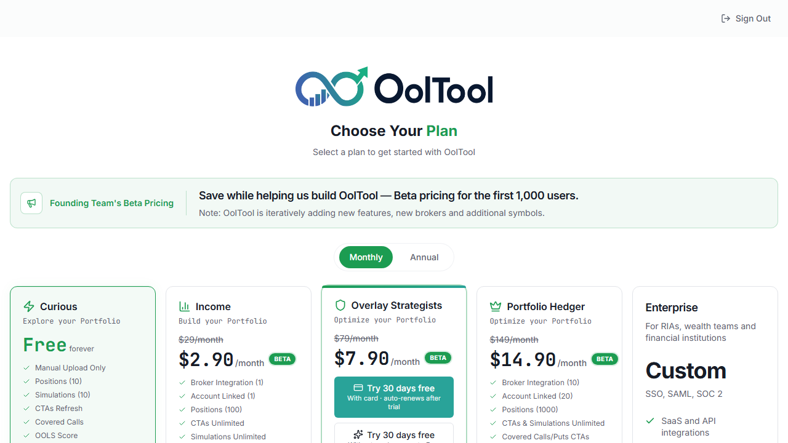
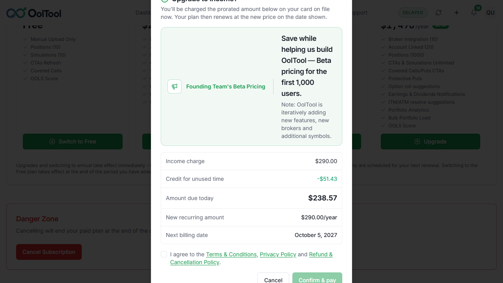
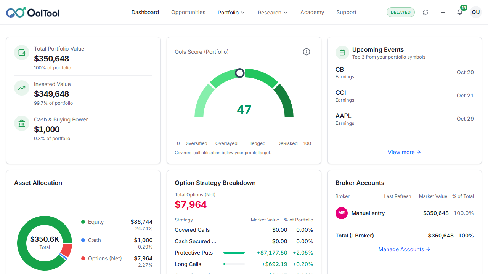
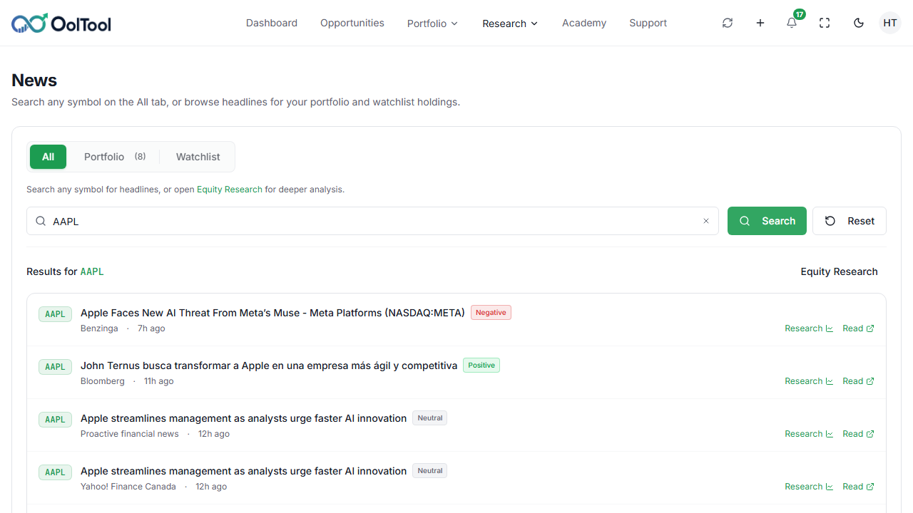
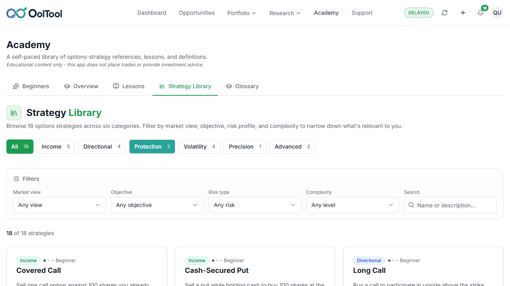
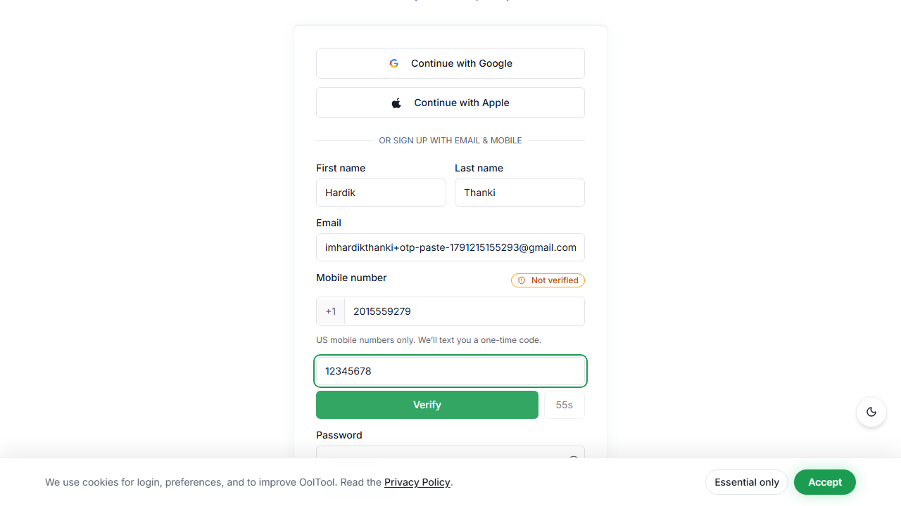
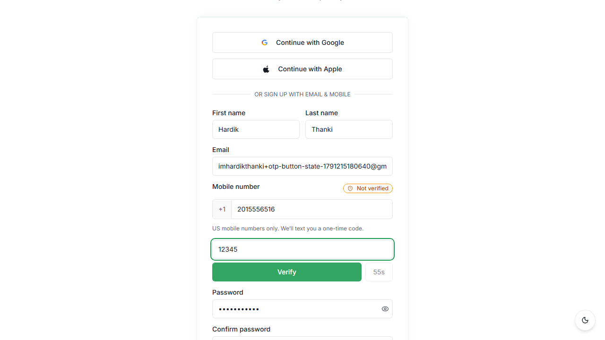

Release thresholds were not met
OOLTool · UAT
This run
Use the menu on the left, or the page names at the top, to open any part of this report.
34 failed10 stories on What failed
!
Decision
NO GO
429 passed and 34 failed, out of 463 checks that ran. 263 were not run. Quality of the checks that ran is 91%.
Quality91%
RiskHIGH
Paths6/11
Passed429Of the checks that ran
Failed34Need a fix before release
Ran463of 726 planned
Not run263Planned, but not in this run
Plan coverage
463 ran64% of 726 planned
Five answers
NO GO
Can we release?
Confidence 91%. Risk HIGH.
Open why
34
Did anything fail?
10 stories to open
Open failures
5
What needs a look?
Access Control, Subscription, Payment, Dashboard, Session Security
Open paths
20
What proof is there?
20 pictures you can open
Open proof
10
What should we do?
10 next steps before the next run
Open next step
Generated10/5/2026, 8:14:56 PM
Sourcejson-reporter
BuildPlaywright JSON
History30 executions
Decision
NO GO
- 463 tests executed; 726 in the inventory.
- 429 passed and 34 failed (executed pass rate 93%).
- 263 documented coverage gaps and 0 unexpected skip(s).
- Needs Review business journey status.
- Evidence is ready for review.
Next action ?
Do not release until blocker and critical failures are resolved.
Why this call?
Why No GO?
- Release thresholds were not met
- Failures or missing critical data require review
- Resolve blockers before release approval
Why, and what to do next
Drivers
NO GO
What shaped the decision
Failures or missing critical data require review
Resolve blockers before release approval
Blockers
34
What needs attention
Subscription Lifecycle Execution > Disposable user can start Overlay Strategists trial with card
Billing / Medium
failed
Subscription Lifecycle Execution > Prepared paid user can preview monthly and annual upgrade calculations
Billing / Critical
failed
Dashboard Navigation > Profile menu closes with Escape and outside click
Dashboard / Medium
failed
Signals
HIGH
Impact and proof
Journey status requires release review.
Evidence is available for review.
Release-impacting failures need resolution.
Review release warnings, blocked coverage, and unexpected skips.
Workflow ?
What should happen next
Do not release until blocker and critical failures are resolved.
Resolve Defects
Close release-impacting failures.
Re-run Failed Tests
Validate affected scenarios again.
Capture Evidence
Review attached proof.
Approve Release
Approve only after review gates pass.
Area status
Showing 11 of 11 areas
Access Control
Not Executed
None ran. 1 check is planned.
0Passed
0Failed
1Not run
None of these checks ran. They are listed under Not run.
Accessibility
Healthy
25 passed. 0 failed. 4 did not run.
25Passed
0Failed
4Not run
4 planned checks did not run.
Authentication
Healthy
65 passed. 0 failed. 9 did not run.
65Passed
0Failed
9Not run
9 planned checks did not run.
Billing
Critical
200 passed. 6 failed. 240 did not run.
200Passed
6Failed
240Not run
6 failures need review
Dashboard
Warning
58 passed. 15 failed. 0 did not run.
58Passed
15Failed
0Not run
15 failures need review
General
Warning
36 passed. 5 failed. 1 did not run.
36Passed
5Failed
1Not run
5 failures need review
MFA
Healthy
1 passed. 0 failed. 7 did not run.
1Passed
0Failed
7Not run
7 planned checks did not run.
Onboarding
Healthy
10 passed. 0 failed. 0 did not run.
10Passed
0Failed
0Not run
Continue monitoring
Password
Healthy
18 passed. 0 failed. 0 did not run.
18Passed
0Failed
0Not run
Add reset-password expiry checks
Profile
Healthy
3 passed. 0 failed. 0 did not run.
3Passed
0Failed
0Not run
No action required
Signup
Healthy
21 passed. 0 failed. 1 did not run.
21Passed
0Failed
1Not run
1 planned check did not run.
No matching areas found in this run.
Risk count
High3Failed areas
Medium1Not fully run
Low7Passed
Amber means a check was skipped unexpectedly, or an important path did not run.
Summary ?
7 of 11 areas are healthy. Billing, Dashboard and General failed. Access Control did not run.
Healthy7
Critical3
Not run1
Registration
100%
Healthy
->
Authentication
100%
Healthy
->
Access Control
0%
Not Executed
->
Profile Setup
100%
Healthy
->
Risk Profile
100%
Healthy
->
Compliance
100%
Healthy
->
Subscription
97%
Critical
->
Payment
97%
Critical
->
Dashboard
79%
Warning
->
Session Security
0%
Not Executed
->
Accessibility
100%
Healthy
How much of each path ran
Bar height is the share of that path that ran in this execution.
100%
100%
0%
100%
100%
100%
100%
100%
100%
0%
100%
Answer
Most paths passed. Start with the failed checks before approving the release.
Email and payment steps that need an outside service are listed under Not run when they were skipped.
Choose an area
Stay on this page. Pick an area below.
All areas
Access Control
Not Executed
None ran. 1 check is planned.
Passed 0
Failed 0
Not run 1
Risk Low
Scenarios 3
Evidence 22 screenshots, 34 logs
Execution 0s
Who can open protected pages, and what a restricted user is blocked from seeing.
All areas
Accessibility
Healthy
25 passed. 0 failed. 4 did not run.
Passed 25
Failed 0
Not run 4
Risk Low
Scenarios 3
Evidence 22 screenshots, 34 logs
Execution 1m 10s
Keyboard navigation, focus order, and accessible validation behavior.
All areas
Authentication
Healthy
65 passed. 0 failed. 9 did not run.
Passed 65
Failed 0
Not run 9
Risk Low
Scenarios 5
Evidence 22 screenshots, 34 logs
Execution 6m 50s
Login, logout, forgot password, JWT/session behavior, and locked-account recovery.
All areas
Billing
Critical
200 passed. 6 failed. 240 did not run.
Passed 200
Failed 6
Not run 240
Risk High
Scenarios 5
Evidence 22 screenshots, 34 logs
Execution 81m 36s
Billing overview, plans, transaction history, invoice access, and PDF availability.
All areas
Dashboard
Warning
58 passed. 15 failed. 0 did not run.
Passed 58
Failed 15
Not run 0
Risk Medium
Scenarios 3
Evidence 22 screenshots, 34 logs
Execution 16m 46s
Dashboard load, refresh, and navigation into profile, billing, and risk pages.
All areas
General
Warning
36 passed. 5 failed. 1 did not run.
Passed 36
Failed 5
Not run 1
Risk Medium
Scenarios 3
Evidence 22 screenshots, 34 logs
Execution 10m 3s
Checks that did not match a product module. Treat these as unmapped coverage.
All areas
MFA
Healthy
1 passed. 0 failed. 7 did not run.
Passed 1
Failed 0
Not run 7
Risk Low
Scenarios 3
Evidence 22 screenshots, 34 logs
Execution 16s
Authenticator, backup codes, and trusted-device checks that were actually run.
All areas
Onboarding
Healthy
10 passed. 0 failed. 0 did not run.
Passed 10
Failed 0
Not run 0
Risk Low
Scenarios 6
Evidence 22 screenshots, 34 logs
Execution 2m 8s
Subscriber registration, verification, risk profile, compliance, and payment handoff.
All areas
Password
Healthy
18 passed. 0 failed. 0 did not run.
Passed 18
Failed 0
Not run 0
Risk Low
Scenarios 4
Evidence 22 screenshots, 34 logs
Execution 2m 13s
Password reset, mismatch handling, current-password validation, and policy enforcement.
All areas
Profile
Healthy
3 passed. 0 failed. 0 did not run.
Passed 3
Failed 0
Not run 0
Risk Low
Scenarios 3
Evidence 22 screenshots, 34 logs
Execution 9s
Profile page access, profile data loading, and read-only email protection.
All areas
Signup
Healthy
21 passed. 0 failed. 1 did not run.
Passed 21
Failed 0
Not run 1
Risk Low
Scenarios 5
Evidence 22 screenshots, 34 logs
Execution 2m 3s
Registration validation, mobile number handling, OTP flow, and password policy.
All failure cards
What failed
Checks that failed for the same reason share one card. Open it to see each screen. The red box marks the control that failed.
The new account email was not confirmed1 check
Failed- Disposable user can start Overlay Strategists trial with card
The upgrade box showed a smaller charge than the full plan price1 check
Failed- Prepared paid user can preview monthly and annual upgrade calculations
The button or message we looked for was not on the page.5 checks
Failed- Profile menu closes with Escape and outside click
- Profile menu sign out blocks direct dashboard access
- Research menu opens equity research for a symbol
- Portfolio menu opens each holdings destination
- Profile menu opens every account option
The page took too long, and the check stopped before it could finish.12 checks
Failed- Research menu opens fundamentals finance news calendar and simulator
- Connect broker keeps an empty form from submitting
- News switches portfolio and watchlist, then searches a symbol
- Company Finance unknown symbol stays empty
- Simulator clears the searched symbol
- Company Finance opens related research pages and clears the symbol
- Simulator searches a symbol and switches the risk profile
- Research menu changes equity, fundamentals, finance, news, calendar, and simulator
- Equity research unknown symbol does not open a company
- Equity research clears a typed symbol
- Equity research keeps an empty symbol on the search prompt
- Subscription management portal opens with current subscription details
The company page shows Internal Server Error3 checks
Failed- Company fundamentals chart range changes
- Company Fundamentals opens a second symbol
- Company Fundamentals unknown symbol stays empty
This check did not finish the way we expected.1 check
Failed- Strategy library clear all restores every strategy
Switching to monthly is scheduled for the current annual renewal3 checks
Failed- Successful annual-to-monthly change updates billing interval when effective
- Successful annual-to-monthly change preserves same plan tier
- Annual-to-monthly billing change is scheduled for next renewal date
The signup code does not stop at six digits3 checks
Product bug- Signup code accepts a seventh digit
- Pasting a longer signup code keeps the extra digits
- Verify turns on before six digits
A hand-added position is counted as a connected broker2 checks
Product bug- SC-03 Broker account limit is one
- LC-011 Manual entry and the broker limit
A trial started with a card still shows the Free plan and no saved card3 checks
Product bug- SC-07 Start trial with a valid card
- SC-09 Saved card on Billing
- LC-007 Active trial and saved card
All failure cards
Every failed check
| Check | Area | What happened | Picture |
|---|---|---|---|
| Disposable user can start Overlay Strategists trial with card | Billing | The new account email was not confirmed, so signup could not continue.What to do: Set the Gmail app password so the test can open the verification email, then rerun onboarding. | Open this group |
| Prepared paid user can preview monthly and annual upgrade calculations | Billing | The upgrade box showed a smaller charge than the full plan price.What to do: Open the upgrade box and compare the charge, credit, and amount due with the plan price, then rerun the upgrade preview. | Open this group |
| Profile menu closes with Escape and outside click | Dashboard | The button or message we looked for was not on the page.What to do: Put the missing button or message on the page, then rerun this check. | Open this group |
| Profile menu sign out blocks direct dashboard access | Dashboard | The button or message we looked for was not on the page.What to do: Put the missing button or message on the page, then rerun this check. | Open this group |
| Research menu opens equity research for a symbol | Dashboard | The button or message we looked for was not on the page.What to do: Put the missing button or message on the page, then rerun this check. | Open this group |
| Research menu opens fundamentals finance news calendar and simulator | Dashboard | The page took too long, and the check stopped before it could finish.What to do: Open the page this check starts on and wait until it is ready, then rerun it. | Open this group |
| Portfolio menu opens each holdings destination | Dashboard | The button or message we looked for was not on the page.What to do: Put the missing button or message on the page, then rerun this check. | Open this group |
| Profile menu opens every account option | Dashboard | The button or message we looked for was not on the page.What to do: Put the missing button or message on the page, then rerun this check. | Open this group |
| Connect broker keeps an empty form from submitting | Dashboard | The page took too long, and the check stopped before it could finish.What to do: Open the page this check starts on and wait until it is ready, then rerun it. | Open this group |
| News switches portfolio and watchlist, then searches a symbol | Dashboard | The page took too long, and the check stopped before it could finish.What to do: Open the page this check starts on and wait until it is ready, then rerun it. | Open this group |
| Company fundamentals chart range changes | Dashboard | The page took too long, and the check stopped before it could finish.What to do: Open the page this check starts on and wait until it is ready, then rerun it. | Open this group |
| Company Finance unknown symbol stays empty | Dashboard | The page took too long, and the check stopped before it could finish.What to do: Open the page this check starts on and wait until it is ready, then rerun it. | Open this group |
| Company Fundamentals opens a second symbol | Dashboard | The page took too long, and the check stopped before it could finish.What to do: Open the page this check starts on and wait until it is ready, then rerun it. | Open this group |
| Simulator clears the searched symbol | Dashboard | The page took too long, and the check stopped before it could finish.What to do: Open the page this check starts on and wait until it is ready, then rerun it. | Open this group |
| Company Fundamentals unknown symbol stays empty | Dashboard | The page took too long, and the check stopped before it could finish.What to do: Open the page this check starts on and wait until it is ready, then rerun it. | Open this group |
| Company Finance opens related research pages and clears the symbol | Dashboard | The page took too long, and the check stopped before it could finish.What to do: Open the page this check starts on and wait until it is ready, then rerun it. | Open this group |
| Simulator searches a symbol and switches the risk profile | Dashboard | The page took too long, and the check stopped before it could finish.What to do: Open the page this check starts on and wait until it is ready, then rerun it. | Open this group |
| Research menu changes equity, fundamentals, finance, news, calendar, and simulator | General | The page took too long, and the check stopped before it could finish.What to do: Open the page this check starts on and wait until it is ready, then rerun it. | Open this group |
| Equity research unknown symbol does not open a company | General | The page took too long, and the check stopped before it could finish.What to do: Open the page this check starts on and wait until it is ready, then rerun it. | Open this group |
| Equity research clears a typed symbol | General | The page took too long, and the check stopped before it could finish.What to do: Open the page this check starts on and wait until it is ready, then rerun it. | Open this group |
| Equity research keeps an empty symbol on the search prompt | General | The page took too long, and the check stopped before it could finish.What to do: Open the page this check starts on and wait until it is ready, then rerun it. | Open this group |
| Strategy library clear all restores every strategy | General | This check did not finish the way we expected.What to do: Fix the screen this check was waiting for, then rerun it. | Open this group |
| Successful annual-to-monthly change updates billing interval when effective | Billing | The billing page did not show a switch between monthly and yearly.What to do: Open Change Plan and confirm the monthly or yearly switch is on the page, then rerun this check. | Open this group |
| Successful annual-to-monthly change preserves same plan tier | Billing | The billing page did not show a switch between monthly and yearly.What to do: Open Change Plan and confirm the monthly or yearly switch is on the page, then rerun this check. | Open this group |
| Annual-to-monthly billing change is scheduled for next renewal date | Billing | The billing page did not show a switch between monthly and yearly.What to do: Open Change Plan and confirm the monthly or yearly switch is on the page, then rerun this check. | Open this group |
| Subscription management portal opens with current subscription details | Billing | The page took too long, and the check stopped before it could finish.What to do: Open the page this check starts on and wait until it is ready, then rerun it. | Open this group |
| Signup code accepts a seventh digit | Signup | Typing a seventh digit is accepted. The field keeps seven digits.What to do: Stop the signup code field at six digits, then rerun this check. | Open this group |
| Pasting a longer signup code keeps the extra digits | Signup | Pasting a longer code keeps eight digits. The field allows eight.What to do: Keep only the first six digits when a longer code is pasted, then rerun this check. | Open this group |
| Verify turns on before six digits | Signup | Verify turns on after five digits.What to do: Keep Verify off until the code is exactly six digits, then rerun this check. | Open this group |
| SC-03 Broker account limit is one | Billing | Manual entry is counted as a connected broker.What to do: Stop counting a hand-added position as a broker connection, then rerun SC-03. | Open this group |
| SC-07 Start trial with a valid card | Billing | Billing still shows the Free plan and does not show the saved card.What to do: Show the active trial and the saved card on Billing, then rerun SC-07. | Open this group |
| SC-09 Saved card on Billing | Billing | The saved card is not shown after the trial starts. This is the same product bug as SC-07.What to do: Show the saved card on Billing after the trial starts, then rerun SC-09. | Open this group |
| LC-007 Active trial and saved card | Billing | Billing shows the Free plan and no saved card. This is the same product bug as SC-07 and SC-09.What to do: Show the active trial and the saved card on Billing, then rerun LC-007. | Open this group |
| LC-011 Manual entry and the broker limit | Billing | Manual entry is counted as a broker connection. This is the same product bug as SC-03.What to do: Stop counting a hand-added position as a broker connection, then rerun LC-011. | Open this group |
All areas
Billing
11 failed checks in this area.
- Disposable user can start Overlay Strategists trial with card
- Prepared paid user can preview monthly and annual upgrade calculations
- Successful annual-to-monthly change updates billing interval when effective
- Successful annual-to-monthly change preserves same plan tier
- Annual-to-monthly billing change is scheduled for next renewal date
- Subscription management portal opens with current subscription details
- SC-03 Broker account limit is one
- SC-07 Start trial with a valid card
- SC-09 Saved card on Billing
- LC-007 Active trial and saved card
- LC-011 Manual entry and the broker limit
All areas
Dashboard
15 failed checks in this area.
- Profile menu closes with Escape and outside click
- Profile menu sign out blocks direct dashboard access
- Research menu opens equity research for a symbol
- Research menu opens fundamentals finance news calendar and simulator
- Portfolio menu opens each holdings destination
- Profile menu opens every account option
- Connect broker keeps an empty form from submitting
- News switches portfolio and watchlist, then searches a symbol
- Company fundamentals chart range changes
- Company Finance unknown symbol stays empty
- Company Fundamentals opens a second symbol
- Simulator clears the searched symbol
- Company Fundamentals unknown symbol stays empty
- Company Finance opens related research pages and clears the symbol
- Simulator searches a symbol and switches the risk profile
The new account email was not confirmed1 check
FailedDisposable user can start Overlay Strategists trial with card
The new account email was not confirmed, so signup could not continue.

The upgrade box showed a smaller charge than the full plan price1 check
FailedPrepared paid user can preview monthly and annual upgrade calculations
The upgrade box showed a smaller charge than the full plan price.

The button or message we looked for was not on the page.5 checks
FailedProfile menu closes with Escape and outside click
The button or message we looked for was not on the page.
No picture was saved
This picture was saved during the run, then a later test run deleted it. The next full run keeps a copy with the report.
Profile menu sign out blocks direct dashboard access
The button or message we looked for was not on the page.
No picture was saved
This picture was saved during the run, then a later test run deleted it. The next full run keeps a copy with the report.
Research menu opens equity research for a symbol
The button or message we looked for was not on the page.
No picture was saved
This picture was saved during the run, then a later test run deleted it. The next full run keeps a copy with the report.
Portfolio menu opens each holdings destination
The button or message we looked for was not on the page.
No picture was saved
This picture was saved during the run, then a later test run deleted it. The next full run keeps a copy with the report.
Profile menu opens every account option
The button or message we looked for was not on the page.
The button or message we looked for was not on the page. The red box marks the control this check was looking at.
The page took too long, and the check stopped before it could finish.12 checks
FailedResearch menu opens fundamentals finance news calendar and simulator
The page took too long, and the check stopped before it could finish.
No picture was saved
This picture was saved during the run, then a later test run deleted it. The next full run keeps a copy with the report.
Connect broker keeps an empty form from submitting
The page took too long, and the check stopped before it could finish.

News switches portfolio and watchlist, then searches a symbol
The page took too long, and the check stopped before it could finish.

Company Finance unknown symbol stays empty
The page took too long, and the check stopped before it could finish.

Simulator clears the searched symbol
The page took too long, and the check stopped before it could finish.

Company Finance opens related research pages and clears the symbol
The page took too long, and the check stopped before it could finish.

Simulator searches a symbol and switches the risk profile
The page took too long, and the check stopped before it could finish.

Research menu changes equity, fundamentals, finance, news, calendar, and simulator
The page took too long, and the check stopped before it could finish.

Equity research unknown symbol does not open a company
The page took too long, and the check stopped before it could finish.
The page took too long, and the check stopped before it could finish. The red box marks the control this check was looking at.
Equity research clears a typed symbol
The page took too long, and the check stopped before it could finish.

Equity research keeps an empty symbol on the search prompt
The page took too long, and the check stopped before it could finish.

Subscription management portal opens with current subscription details
The page took too long, and the check stopped before it could finish.
No picture was saved
TimeoutError: locator.waitFor: Timeout 30000ms exceeded.
The company page shows Internal Server Error3 checks
FailedCompany fundamentals chart range changes
The page took too long, and the check stopped before it could finish.

Company Fundamentals opens a second symbol
The page took too long, and the check stopped before it could finish.

Company Fundamentals unknown symbol stays empty
The page took too long, and the check stopped before it could finish.

This check did not finish the way we expected.1 check
FailedStrategy library clear all restores every strategy
This check did not finish the way we expected.

Switching to monthly is scheduled for the current annual renewal3 checks
FailedSuccessful annual-to-monthly change updates billing interval when effective
The billing page did not show a switch between monthly and yearly.
No picture was saved
expect(locator).toBeVisible() failed
Successful annual-to-monthly change preserves same plan tier
The billing page did not show a switch between monthly and yearly.
No picture was saved
expect(locator).toBeVisible() failed
Annual-to-monthly billing change is scheduled for next renewal date
The billing page did not show a switch between monthly and yearly.
No picture was saved
expect(locator).toBeVisible() failed
The signup code does not stop at six digits3 checks
Product bugSignup code accepts a seventh digit
Typing a seventh digit is accepted. The field keeps seven digits.
Typing a seventh digit is accepted. The field keeps seven digits. The red box marks the control this check was looking at.
Pasting a longer signup code keeps the extra digits
Pasting a longer code keeps eight digits. The field allows eight.

Verify turns on before six digits
Verify turns on after five digits.

A hand-added position is counted as a connected broker2 checks
Product bugSC-03 Broker account limit is one
Manual entry is counted as a connected broker.
No picture was saved
This run has no picture. The check reported the product bug before a screen was saved.
LC-011 Manual entry and the broker limit
Manual entry is counted as a broker connection. This is the same product bug as SC-03.
No picture was saved
This run has no picture. The check reported the product bug before a screen was saved.
A trial started with a card still shows the Free plan and no saved card3 checks
Product bugSC-07 Start trial with a valid card
Billing still shows the Free plan and does not show the saved card.
No picture was saved
This run has no picture. The check reported the product bug before a screen was saved.
SC-09 Saved card on Billing
The saved card is not shown after the trial starts. This is the same product bug as SC-07.
No picture was saved
This run has no picture. The check reported the product bug before a screen was saved.
LC-007 Active trial and saved card
Billing shows the Free plan and no saved card. This is the same product bug as SC-07 and SC-09.
No picture was saved
This run has no picture. The check reported the product bug before a screen was saved.
Choose a reason
Only the card you open is shown. Search finds one group.
Blocked
182checks
Need a product or admin change first.
Need a setup
20checks
Need an email, code, or prepared user.
Already covered
11checks
Checked by another test that did run.
Later
50checks
Not part of this release.
Need a look
0checks
Skipped without a clear reason.
Billing
175checks
Blocked. Need a product or admin change first
Authentication
7checks
Blocked. Need a product or admin change first
Billing
12checks
Controlled. Need an email, code, or prepared user
MFA
6checks
Controlled. Need an email, code, or prepared user
Access Control
1checks
Controlled. Need an email, code, or prepared user
General
1checks
Controlled. Need an email, code, or prepared user
Billing
11checks
Traceability. Already checked by another test
Billing
42checks
Future. Planned for a later release
Accessibility
4checks
Future. Planned for a later release
Authentication
2checks
Future. Planned for a later release
MFA
1checks
Future. Planned for a later release
Signup
1checks
Future. Planned for a later release
No group matches that search.
Blocked
Billing
175checks
Need a product or admin change first
No subscription charge during trial
Requires Stripe test account/API access to verify ledger/payment intent amount.
Same payment method cannot receive another trial
Requires Stripe payment-method fingerprint visibility through API/admin.
Trial lasts exactly 30 days
Requires admin/API time travel or scheduler controls to set trial start/end dates.
Day 25 no-card reminder is sent once
Requires scheduler trigger and email/in-app notification capture.
Day 28 no-card reminder is sent once
Requires scheduler trigger and email/in-app notification capture.
Day 29 no-card final reminder is sent once
Requires scheduler trigger and email/in-app notification capture.
Day 29 with-card final reminder is sent once
Requires scheduler trigger and email/in-app notification capture.
No-card trial downgrades to Free after expiry
Requires admin/API expiry control or scheduler trigger for trial expiry.
Broker integrations disconnect after no-card expiry
Requires expired trial fixture plus broker connection data.
Imported portfolio positions are deleted after no-card expiry
Requires portfolio seed data and DB/admin validation of deletion.
Premium features are unavailable after expiry
Requires expired trial fixture and feature entitlement selectors.
Subscribe prompt appears after trial expiry
Requires expired trial fixture.
With-card trial converts to paid after expiry
Requires trial expiry scheduler plus Stripe subscription/invoice validation.
Billing starts automatically after with-card trial expiry
Requires Stripe invoice/payment validation after trial conversion.
Billing cycle resets after trial-to-paid subscription
Requires Stripe/API visibility for billing cycle anchor and renewal date.
Failed payment after trial expiry enters grace period
Requires trial expiry, failed renewal card fixture, scheduler/webhook control, and grace-period config. Requires trial expiry, failed renewal card fixture, scheduler/webhook con...
Failed billing reminder is sent
Requires failed-payment fixture plus notification capture.
Trial conversion audit log is created
Requires admin/API/DB access to audit log records after trial conversion.
Reminder analytics are tracked
Requires analytics/admin event visibility.
Paid subscription can be started from expired trial upgrade prompt
Requires expired-trial fixture or scheduler/API time control.
Successful subscription confirmation email is sent
Requires email inbox/API access or notification capture.
Successful purchase creates Stripe customer and subscription records
Requires Stripe sandbox API/admin access to validate customer/subscription objects.
Subscription purchase audit log is created
Requires admin/API/DB access to audit log records.
Duplicate checkout session cannot create duplicate paid subscriptions
Requires backend/API visibility into checkout session idempotency and subscription count.
Expired checkout session cannot activate subscription
Requires expired checkout-session fixture or Stripe/API session control.
Double-clicking purchase does not create duplicate checkout sessions
Requires backend/API visibility into checkout session creation and idempotency keys.
Delayed Stripe webhook keeps subscription pending until payment confirmation is received
Requires webhook delay/retry control or backend subscription state API.
Payment receipt or subscription confirmation email is received after purchase
Requires email inbox/API access or notification capture service.
Successful upgrade unlocks target-plan entitlements
Requires entitlement selectors and post-upgrade account fixture.
Successful upgrade keeps existing user data and portfolio data
Requires portfolio/broker seed data and post-upgrade data integrity validation.
Successful upgrade records transaction history entry
Requires Stripe invoice/payment record visibility after upgrade.
Successful upgrade creates invoice with correct prorated amount
Business rule confirmed: prorated charge is required on upgrade. Requires Stripe invoice API/admin access and deterministic proration. Business rule confirmed: prorated charge i...
Upgrade confirmation email is sent
Requires email inbox/API access or notification capture service.
Failed upgrade payment does not change current plan
Requires failed-payment upgrade fixture and post-failure billing state validation.
Upgrade from monthly lower plan to monthly higher plan is handled correctly
Business rule confirmed: upgrade is allowed and starts a new billing cycle with prorated charge. Requires lower monthly plan account and Stripe proration validation. Business ru...
Upgrade from annual lower plan to annual higher plan is handled correctly
Business rule confirmed: upgrade is allowed and starts a new billing cycle with prorated charge. Requires annual lower-plan account and Stripe proration validation. Business rul...
Upgrade from monthly lower plan to annual higher plan is handled correctly
Business rule confirmed: upgrade across billing interval is allowed and starts a new billing cycle with prorated charge. Requires Stripe proration visibility. Business rule conf...
Upgrade preserves billing customer and payment method
Requires Stripe customer/payment-method API or admin visibility.
Upgrade does not create duplicate active subscriptions
Requires backend/Stripe subscription count visibility.
Double-clicking upgrade action is idempotent
Requires backend/API visibility into idempotency or duplicate checkout prevention.
Upgrade is blocked for cancelled subscription after access end date
Requires cancelled/expired subscription fixture.
Upgrade is available for subscription scheduled to cancel before end date when allowed
Business rule confirmed: users can upgrade any time while access is active. Requires scheduled-cancellation fixture to verify behavior before access end date. Business rule conf...
Upgrade audit log is created
Requires admin/API/DB access to audit log records.
Upgrade webhook processing updates subscription status correctly
Requires webhook event visibility or backend state API.
Upgrade failure webhook does not unlock higher-tier entitlement
Requires failed upgrade webhook fixture and entitlement validation.
Downgrade from paid plan to Free is only available when business rules allow it
Requires confirmed business rule for paid-to-free downgrade and fixture account.
Downgrade confirmation displays lost feature warning
SubscriptionLifecycleExecution.spec.ts looks for lost-feature/limit copy when present. Dedicated comparison warning copy is still not a guaranteed selector, so this FRD row stay...
Downgrade confirmation displays account limits after downgrade
Requires plan limit metadata and downgrade confirmation screen.
Downgrade is scheduled for end of current billing cycle when applicable
Requires Stripe subscription schedule/API visibility and deterministic cycle date.
Immediate downgrade is blocked or allowed according to business rules
Requires confirmed downgrade timing rule and Stripe/API validation.
Downgrade keeps current higher-tier access until effective date
Requires scheduled downgrade fixture and entitlement validation before effective date.
Downgrade applies lower-tier entitlements after effective date
Requires scheduler/time control and entitlement validation after effective date.
Downgrade does not delete user account data immediately
Requires seeded portfolio/broker/account data and post-downgrade data integrity validation. Requires seeded portfolio/broker/account data and post-downgrade data integrity valid...
Downgrade handles existing broker connections above new plan limit
Requires broker connection seed data above target plan limit.
Downgrade handles portfolio positions above new plan limit
Requires portfolio position seed data above target plan limit.
Downgrade handles linked accounts above new plan limit
Requires linked-account seed data above target plan limit.
Downgrade warning clearly explains restricted features
Requires downgrade warning UI/copy fixture.
Downgrade from annual higher plan to annual lower plan is handled correctly
Requires annual higher-plan fixture and Stripe subscription schedule validation.
Downgrade from monthly higher plan to monthly lower plan is handled correctly
Requires monthly higher-plan fixture and Stripe subscription update validation.
Downgrade from annual higher plan to monthly lower plan follows business rule
Requires confirmed interval-change rule and Stripe schedule validation.
Downgrade from monthly higher plan to annual lower plan follows business rule
Requires confirmed interval-change rule and Stripe proration/schedule validation.
Downgrade with pending cancellation follows correct precedence
Requires account fixture with scheduled cancellation plus downgrade eligibility rule.
Downgrade with unpaid invoice is blocked or handled correctly
Requires unpaid invoice fixture and expected business rule.
Downgrade with failed payment state is blocked or handled correctly
Requires failed-payment subscription fixture.
Scheduled downgrade appears in billing overview
Requires scheduled downgrade fixture.
Scheduled downgrade appears in subscription history
Requires scheduled downgrade fixture and history UI state.
Downgrade confirmation email is sent
Requires email inbox/API access or notification capture service.
Downgrade audit log is created
Requires admin/API/DB access to audit log records.
User can resume or cancel scheduled downgrade before effective date when allowed
Requires scheduled downgrade fixture and confirmed resume/cancel rule.
Cancelling scheduled downgrade keeps current plan active
Requires scheduled downgrade fixture and Stripe schedule cancellation validation.
Double-clicking downgrade confirmation is idempotent
Requires backend/API visibility into duplicate downgrade prevention.
Downgrade preserves billing customer and saved payment method
Requires Stripe customer/payment-method API visibility.
Downgrade does not create duplicate subscription records
Requires backend/Stripe subscription count visibility.
Downgrade webhook updates subscription status correctly
Requires webhook event visibility or backend state API.
Downgrade failure webhook keeps current plan unchanged
Requires failed downgrade webhook fixture and entitlement validation.
Downgrade effective-date reminder notification is sent when configured
Requires scheduler control and notification capture.
Downgrade applies feature limits consistently across dashboard modules
Requires entitlement selectors across dashboard modules.
Downgrade handles broker integration removal or restriction according to rule
Requires broker integration data and confirmed retention/removal rule.
Downgrade handles bulk portfolio import availability according to target plan
Requires feature entitlement selectors for bulk portfolio load.
Downgrade handles analytics availability according to target plan
Requires analytics entitlement selectors and target-plan fixture.
Downgrade invoice or credit note is generated when applicable
Requires Stripe invoice/credit-note API visibility and confirmed billing rule.
Successful monthly-to-annual change preserves entitlements
Requires entitlement selectors and post-change account fixture.
Successful monthly-to-annual change records transaction history when charge exists
Requires Stripe invoice/payment visibility for interval change.
Invoice or receipt shows correct annual amount after interval change
Requires Stripe invoice/API and deterministic amount validation.
Confirmation email is sent after monthly-to-annual change
Requires email inbox/API access or notification capture.
Failed payment during monthly-to-annual change keeps monthly billing active
Requires failed-payment fixture and post-failure billing state validation.
Double-clicking annual switch confirmation is idempotent
Requires backend/API visibility into duplicate interval-change prevention.
Monthly-to-annual change is blocked for cancelled subscription after end date
Requires cancelled/expired subscription fixture.
Monthly-to-annual change follows rule for subscription scheduled to cancel
Requires scheduled-cancellation fixture and confirmed business rule.
Monthly-to-annual change preserves Stripe customer and payment method
Requires Stripe customer/payment-method API visibility.
Monthly-to-annual change does not create duplicate active subscriptions
Requires backend/Stripe subscription count visibility.
Monthly-to-annual change audit log is created
Requires admin/API/DB access to audit log records.
Monthly-to-annual webhook updates billing interval correctly
Requires webhook event visibility or backend state API.
Monthly-to-annual failure webhook leaves monthly billing unchanged
Requires failed webhook fixture and billing state validation.
Monthly-to-annual change respects tax and currency configuration
Requires Stripe tax/currency API visibility.
Annual-to-monthly confirmation displays whether change is immediate or scheduled
Requires confirmed business rule and Stripe subscription schedule visibility.
Successful annual-to-monthly change preserves entitlements until effective date
Requires entitlement selectors and scheduled interval-change fixture.
Annual-to-monthly change records transaction history when charge or credit exists
Requires Stripe invoice/payment/credit visibility for interval change.
Invoice or credit note shows correct annual-to-monthly amount
Requires Stripe invoice/credit-note API and deterministic amount validation.
Confirmation email is sent after annual-to-monthly change
Requires email inbox/API access or notification capture.
Failed payment during annual-to-monthly change keeps annual billing active
Requires failed-payment fixture and post-failure billing state validation.
Double-clicking monthly switch confirmation is idempotent
Requires backend/API visibility into duplicate interval-change prevention.
Annual-to-monthly change is blocked for cancelled subscription after end date
Requires cancelled/expired subscription fixture.
Annual-to-monthly change follows rule for subscription scheduled to cancel
Requires scheduled-cancellation fixture and confirmed business rule.
Annual-to-monthly change preserves Stripe customer and payment method
Requires Stripe customer/payment-method API visibility.
Annual-to-monthly change does not create duplicate active subscriptions
Requires backend/Stripe subscription count visibility.
Annual-to-monthly change audit log is created
Requires admin/API/DB access to audit log records.
Annual-to-monthly webhook updates billing interval correctly
Requires webhook event visibility or backend state API.
Annual-to-monthly failure webhook leaves annual billing unchanged
Requires failed webhook fixture and billing state validation.
Annual-to-monthly change respects tax and currency configuration
Requires Stripe tax/currency API visibility.
Annual-to-monthly scheduled change can be cancelled before effective date
Requires scheduled interval-change fixture and confirmed cancellation rule.
Cancelling annual-to-monthly scheduled change keeps annual billing active
Requires Stripe schedule cancellation validation.
Final cancellation requires explicit confirmation
Requires backend/admin reset support for disposable paid subscription fixture.
Dedicated fixture can be cancelled successfully
Requires disposable paid subscription that may be safely cancelled.
Cancellation confirmation message is displayed
Requires safe final cancellation execution.
Paid access remains available until current billing period ends
Requires time-controlled or backend subscription period fixture.
Cancellation reason is captured for audit or analytics
Requires admin/API access to cancellation metadata.
Cancellation confirmation email is sent
Requires mailbox access and safe final cancellation fixture.
Paid feature entitlement remains during cancellation grace period
Requires entitlement API or seeded billing period fixture.
Paid feature entitlement is removed after billing period ends
Requires time-travel, webhook simulation, or backend fixture.
Double-clicking final cancellation is idempotent
Requires backend idempotency verification for final cancellation.
Subscription with unpaid invoice follows configured cancellation rule
Requires unpaid invoice fixture.
Pending upgrade is handled before cancellation
Requires pending upgrade fixture.
Stripe cancellation webhook updates cancel-at-period-end state
Requires webhook simulation or Stripe event fixture.
Webhook retry does not duplicate cancellation records
Requires webhook idempotency test support.
Cancellation reason analytics can be reviewed by admin
Requires admin analytics access.
Duplicate cancellation request does not duplicate subscription state
Requires backend idempotency validation.
Final cancellation scenario uses disposable fixture only
Requires dedicated disposable paid account and reset process.
Renewal payment failure changes subscription to past-due state
Requires Stripe renewal failure webhook fixture.
Failed renewal creates an unpaid invoice
Requires failed renewal invoice fixture.
First dunning email is sent after failed renewal
Requires mailbox access and failed renewal fixture.
Retry schedule follows configured dunning cadence
Requires time-controlled retry scheduler or backend API.
Grace period starts after failed renewal
Requires billing status fixture and entitlement API.
Paid access is retained during configured grace period
Requires grace-period entitlement fixture.
Paid access is restricted after grace period expires
Requires time-travel or backend state fixture.
Updating payment method recovers past-due subscription
Requires past-due fixture and Stripe portal recovery flow.
Successful retry marks failed invoice as paid
Requires retry payment success webhook fixture.
Repeated failed retries do not duplicate invoice records
Requires webhook idempotency validation.
Final failed renewal cancels or downgrades subscription according to policy
Requires dunning policy decision and backend fixture.
In-app failed payment notification is displayed
Requires past-due account fixture.
invoice.payment_failed webhook is processed correctly
Requires webhook simulation or backend integration test.
customer.subscription.updated webhook updates billing status
Requires webhook simulation or backend integration test.
invoice.payment_succeeded webhook recovers subscription
Requires webhook simulation or backend integration test.
Duplicate webhook delivery is idempotent
Requires webhook replay support.
Failed payment creates audit log entry
Requires admin/API audit log access.
Payment recovery creates audit log entry
Requires admin/API audit log access.
Dunning email includes plan name and failed amount
Requires mailbox access and failed payment fixture.
Dunning email includes update payment link
Requires mailbox access and failed payment fixture.
Expired payment update link is handled clearly
Requires expired portal session fixture.
Failed payment after upgrade keeps previous plan active
Requires upgrade payment failure fixture.
Failed payment after interval change keeps previous billing interval
Requires billing interval payment failure fixture.
Admin can retry failed payment when supported
Requires admin billing management support.
Removed payment method before renewal triggers failed payment flow
Requires saved payment method removal fixture.
Expired saved card renewal follows dunning flow
Requires saved expired-card renewal fixture.
Invalid country or currency setup is handled safely
Requires Stripe/customer currency fixture.
Tax calculation failure prevents incorrect subscription activation
Requires backend/Stripe tax failure simulation.
Unpaid invoice PDF or invoice view is available when configured
Requires unpaid invoice fixture.
Paid-after-retry invoice PDF opens successfully
Requires recovered invoice fixture.
Transaction history shows failed payment status
Requires failed payment fixture visible in app history.
Billing overview shows past-due or payment issue state
Requires past-due account fixture.
Dashboard banner warns user about payment issue
Requires past-due account fixture.
Feature access remains correct during payment grace period
Requires grace-period entitlement fixture.
Feature access is restricted after payment suspension
Requires suspended account fixture.
Dunning retry configuration is validated against admin settings
Requires admin dunning configuration API or UI fixture.
Without-card trial moves user to Free plan when trial expires
Requires trial-expiry fixture, scheduler/time travel, or backend time-control API.
With-card trial auto-renews to paid Overlay Strategists monthly subscription at expiry
Requires trial-expiry fixture, Stripe webhook/scheduler control, and Stripe ledger/API visibility. Requires trial-expiry fixture, Stripe webhook/scheduler control, and Stripe le...
No-card trial enforces linked account and portfolio position limits
Requires broker linked-account fixture and portfolio position seed/API support.
Immediate cancellation is restricted to controlled admin or explicit destructive flow
Requires admin/business approval, dedicated throwaway subscription, and rollback/refund policy. Requires admin/business approval, dedicated throwaway subscription, and rollback/...
User loses paid access after cancellation expiry and can select a new plan
Requires cancellation-expiry fixture or scheduler/time-control API.
Refund processing updates Stripe ledger, billing status, and transaction history
Requires Stripe API/admin access, refund webhook observability, and transaction-history fixture. Requires Stripe API/admin access, refund webhook observability, and transaction-...
Paid subscription renewal, reminders, and invoice history are validated across billing cycles
Requires renewal scheduler/time travel, email/notification access, and Stripe ledger visibility. Requires renewal scheduler/time travel, email/notification access, and Stripe le...
Failed renewal payment enters dunning/grace state and prompts payment recovery
Requires Stripe dunning configuration, failed-renewal fixture, webhook controls, and scheduler access. Requires Stripe dunning configuration, failed-renewal fixture, webhook con...
Trial, conversion, purchase, upgrade, downgrade, cancellation, and refund events are auditable
Requires admin audit-log, API, or database event validation source.
Notification and email events are captured for signup, trial, billing, unlock, and password reset
Requires email inbox/API access, notification test hooks, or message capture service.
Audit trail records security, billing, trial, and profile changes
Requires admin/API/DB access to audit log records.
Blocked
Authentication
7checks
Need a product or admin change first
3DS or authentication-required card flow is handled without losing subscription context
Requires Stripe sandbox 3DS card fixture and confirmation handling rules.
Downgrade API rejects unauthorized or cross-account downgrade attempts
Requires backend/API support for authorization validation.
Annual-to-monthly API rejects unauthorized or cross-account interval changes
Requires backend/API support for authorization validation.
Refund action is restricted to authorized admin workflow
Requires admin permissions and refund test fixture.
Cancellation portal deep link requires authenticated customer session
Requires secure portal deep-link fixture.
Unauthorized cross-account cancellation is blocked by backend
Requires backend/API authorization test support.
Unauthorized payment update attempt is blocked
Requires backend/API authorization validation.
Controlled
Billing
12checks
Need an email, code, or prepared user
Overlay Strategists with-card trial opens Stripe checkout with trial details
Checkout details are validated on the with-card trial user.
Overlay Strategists with-card trial blocks missing Stripe card details
Missing card validation is folded into the with-card trial user.
Overlay Strategists with-card trial rejects declined Stripe card
Declined card validation is folded into the with-card trial user.
Stripe checkout displays renewal or auto-renewal copy before payment
Set BLOCKED_SCENARIO_EXECUTION_ENABLED=true and STRIPE_CHECKOUT_URL to run.
Missing cardholder name is blocked before subscription activation
Set BLOCKED_SCENARIO_EXECUTION_ENABLED=true and STRIPE_CHECKOUT_URL to run.
Failed checkout keeps user without active paid subscription
Set BLOCKED_SCENARIO_EXECUTION_ENABLED=true and STRIPE_CHECKOUT_URL to run.
Closing Stripe checkout returns user safely without activating subscription
Set BLOCKED_SCENARIO_EXECUTION_ENABLED=true and STRIPE_CHECKOUT_URL to run.
Missing cardholder name is blocked before subscription activation
Requires BLOCKED_SCENARIO_EXECUTION_ENABLED=true and STRIPE_CHECKOUT_URL; validation asserted flexibly (blocked-state OR error copy). Requires BLOCKED_SCENARIO_EXECUTION_ENABLED...
Successful monthly-to-annual change updates billing interval
Income Builder has no monthly/annual switch on the plans screen. Could not find interval control for Income Builder. Visible controls: Dashboard | Opportunities | Portfolio | Re...
Successful monthly-to-annual change preserves same plan tier
Income Builder has no monthly/annual switch on the plans screen. Could not find interval control for Income Builder. Visible controls: Dashboard | Opportunities | Portfolio | Re...
No-card trial can be cancelled without payment method
No-card trial billing does not show Cancel subscription.
Monthly-to-annual billing change is immediate and uses prorated amount
Income Builder has no monthly/annual switch on the plans screen. Could not find interval control for Income Builder. Visible controls: Dashboard | Opportunities | Portfolio | Re...
Controlled
MFA
6checks
Need an email, code, or prepared user
User enables authenticator app MFA and saves generated backup codes
Requires TOTP secret or manual authenticator OTP handoff during enablement.
MFA login accepts valid OTP and rejects invalid OTP
Requires MFA_LOCAL_TOTP_SECRET or manual OTP fallback.
Backup code login succeeds once and used backup code cannot be reused
Requires fresh one-time backup code fixture; backup codes are single-use.
Trusted-device checkbox allows remembered device to skip MFA on next login
Requires stable browser profile plus MFA_LOCAL_TOTP_SECRET or manual OTP.
Removing trusted device requires MFA again on next login
Requires trusted-device fixture and MFA_LOCAL_TOTP_SECRET or manual OTP.
Disabling 2FA removes MFA challenge for future login
Requires account with enabled MFA and password/OTP confirmation.
Controlled
Access Control
1checks
Need an email, code, or prepared user
Role-based permissions hide or block unauthorized functionality
Requires PERMISSION_TEST_ENABLED plus prepared allowed and restricted users.
Controlled
General
1checks
Need an email, code, or prepared user
Temporarily locked account can request email unlock link
Requires a locked-account fixture and email-link handoff.
Traceability
Billing
11checks
Already checked by another test
New user can reach Overlay Strategists trial option
Plan catalog validation already covers Overlay Strategists trial options.
Income Builder monthly checkout shows subscription summary before payment
Covered by the one-user paid plan checkout summaries test.
Portfolio Hedger annual checkout shows subscription summary before payment
Covered by the one-user paid plan checkout summaries test.
Income Builder annual checkout shows subscription summary before payment
Covered by the one-user paid plan checkout summaries test.
Income Builder checkout shows currency and conversion details before payment
Covered by the one-user paid plan checkout summaries test.
Income Builder checkout preserves context on refresh and returns safely before payment
Covered by the one-user paid plan checkout summaries test.
Monthly-to-annual matrix coverage is visible in AIR blocked/skipped coverage
AIR coverage-ingestion row. No additional UI flow.
Annual-to-monthly matrix coverage is visible in AIR blocked/skipped coverage
AIR coverage-ingestion row. No additional UI flow.
Cancellation matrix coverage appears in AIR blocked and skipped coverage
AIR coverage-ingestion row. No additional UI flow.
Failed payment and dunning matrix coverage is visible in AIR blocked coverage
AIR coverage-ingestion row. No additional UI flow.
AIR shows subscription lifecycle coverage, blocked gaps, known bugs, and executable coverage status
AIR coverage-ingestion row. No additional UI flow.
Future
Billing
42checks
Planned for a later release
Removing only payment method during trial keeps trial active until expiry
Requires active with-card trial account and payment-method management UI/API. Business rule: user can cancel any time but keeps plan access until trial expiry. Requires active w...
Communication preference selection is supported
Requires confirmation of communication preference UI location and expected options.
Retry after failed payment starts a clean checkout session
Requires failed-payment fixture plus clean retry/session validation.
Invoice PDF amount, currency, and plan match the purchased subscription
Requires deterministic plan amount fixture and PDF content parsing/validation.
Checkout network interruption shows recoverable error and allows retry
Requires controlled network failure injection and retry expectation.
Upgrade invoice PDF opens and matches plan change details
Requires post-upgrade invoice PDF fixture and PDF content validation.
Declined card during upgrade shows payment failure message
Requires upgrade checkout fixture with Stripe declined-card path.
Incomplete payment details during upgrade are blocked
Requires upgrade checkout fixture and Stripe validation selectors.
Upgrade retry after failed payment starts clean retry flow
Requires failed upgrade payment fixture and retry behavior confirmation.
Downgrade with currency conversion displays correct amount and currency
Requires deterministic currency fixture and Stripe copy expectations.
Downgrade can be reported correctly in AIR evidence and history
Requires completed downgrade execution fixture and AIR historical comparison run.
Successful monthly-to-annual change records subscription history
Requires completed interval-change fixture.
Invoice PDF opens after monthly-to-annual change
Requires completed interval-change invoice fixture.
Declined card during interval change shows payment failure
Requires billing-change checkout with declined-card fixture.
Incomplete payment details during interval change are blocked
Requires billing-change checkout fixture and Stripe validation selectors.
Annual savings messaging is displayed accurately
Requires final pricing/savings copy expectations.
Monthly-to-annual change can be represented in AIR history
Requires completed interval-change execution and AIR historical comparison run.
Annual-to-monthly change records subscription history
Requires completed interval-change fixture.
Invoice or credit note PDF opens after annual-to-monthly change
Requires completed interval-change invoice or credit-note fixture.
Declined card during annual-to-monthly change shows payment failure
Requires billing-change checkout with declined-card fixture.
Incomplete payment details during annual-to-monthly change are blocked
Requires billing-change checkout fixture and Stripe validation selectors.
Loss of annual savings message is displayed accurately
Requires final pricing/savings copy expectations.
Annual-to-monthly change is represented correctly in billing overview
Requires completed interval-change fixture.
Annual-to-monthly change can be reported correctly in AIR history
Requires completed interval-change execution and AIR historical comparison run.
Cancellation reason is required before final cancellation
Requires a dedicated safe cancellation fixture to validate final-submit guardrails.
Continue to cancellation shows final confirmation before destructive action
Requires fixture where final confirmation can be opened without impacting shared accounts. Requires fixture where final confirmation can be opened without impacting shared accou...
Scheduled cancellation state persists after refresh
Requires stable scheduled-cancel fixture that can be reused without mutation.
Resume or reactivate action is visible when subscription is scheduled to cancel
Requires product-supported resume cancellation control or Stripe portal fixture.
Upgrade is blocked or clearly handled after subscription is scheduled to cancel
Safe cancellation lifecycle state is readable in the Stripe portal; exact upgrade behavior after scheduled cancellation still requires a scheduled-cancel fixture. Safe cancellat...
Payment method update behavior is clear after cancellation is scheduled
Requires scheduled-cancel fixture.
Subscription cancellation history entry is displayed
Requires historical cancelled subscription fixture.
Transaction history does not create an unexpected extra charge on cancellation
Requires final cancellation fixture with billing history verification.
Missing cancellation reason blocks final cancellation when required
Requires final cancellation form validation fixture.
Cancellation feedback max length is handled safely
Requires final cancellation form validation fixture.
Cancellation terms or policy link opens correctly
Requires stable Stripe portal policy link selector.
Support contact is available during cancellation flow
Requires support link/copy confirmation in portal.
Cancellation state is represented in AIR historical intelligence
Requires multiple historical AIR executions with cancellation state.
Cancellation state is searchable in AIR
Requires cancellation state in normalized AIR data.
No-card trial expiry downgrades user to free plan
Covered conceptually in trial matrix; requires time-controlled trial expiry.
AIR records failed payment evidence when available
Requires failed payment execution artifacts in AIR.
AIR history highlights failed payment trend
Requires historical failed payment executions.
Refund failure or partial refund shows clear user/admin state
Requires business-approved refund edge-case matrix and Stripe refund failure fixture.
Future
Accessibility
4checks
Planned for a later release
Browser refresh during upgrade flow does not lose selected target plan
Requires stable upgrade flow session and refresh behavior.
Browser refresh during downgrade confirmation does not lose selected target plan
Requires stable downgrade flow and refresh behavior.
Browser refresh during interval change does not lose target annual plan
Requires stable interval-change flow and refresh behavior.
Browser refresh during annual-to-monthly flow does not lose selected target monthly plan
Requires stable interval-change flow and refresh behavior.
Future
Authentication
2checks
Planned for a later release
Expired session redirects to login without exposing protected dashboard data
Requires token/session expiry control or backend test hook.
Login lockout and unlock-link rate limits follow admin configuration
Requires rate-limit configuration API/admin access and safe lockout fixture.
Future
MFA
1checks
Planned for a later release
Role change from member to admin applies correct MFA policy on next login
Requires confirmed MFA role-policy behavior and admin API/UI fixture.
Future
Signup
1checks
Planned for a later release
Same mobile number is allowed across multiple accounts when business rule permits it
Requires explicit business-rule confirmation and two-account fixture using same mobile number. Requires explicit business-rule confirmation and two-account fixture using same mo...
429 checks passed
Open an area to see what this run confirmed.
Showing 46 of 46 areas
New subscription checkout
37checks passed
Each paid plan shows its checkout summary before payment.
Full subscription lifecycle
29checks passed
A new subscriber can move from signup through plan selection.
Cancellation
25checks passed
Cancellation reaches confirmation and is not completed.
Sign-in rules
24checks passed
Invalid sign-in is blocked and a valid sign-in reaches the product.
Monthly and annual billing
23checks passed
Monthly and annual prices can be switched before payment.
Signup rules
23checks passed
Signup fields, consent, and the one-time code behave as required.
Dashboard navigation
20checks passed
Moving across the signed-in product without losing the session.
Subscription lifecycle steps
18checks passed
Lifecycle steps that are safe to run in this environment.
Dashboard
16checks passed
Checks in this part of the product that passed in this run.
Trial signup
16checks passed
The trial path reaches plan selection without a paid charge.
Deeper dashboard checks
15checks passed
Finance, news, analytics, academy, watchlist, support, simulator, and fundamentals.
Billing
14checks passed
Checks in this part of the product that passed in this run.
Plan upgrades
14checks passed
The upgrade path shows the current plan before a change.
Sign-in screens
14checks passed
Sign-in, forgot password, and the related screens load and can be used.
Accessibility and browser
12checks passed
Pages can be opened and inspected in the browser.
Authentication
12checks passed
Checks in this part of the product that passed in this run.
Failed payment
11checks passed
A failed payment stays on the billing recovery path.
General
11checks passed
Checks in this part of the product that passed in this run.
Plan downgrades
11checks passed
The downgrade path shows the lower plan before a change.
Onboarding
8checks passed
Onboarding fields are checked before the user continues.
Password rules
8checks passed
Weak, empty, and mismatched passwords are blocked.
Session and protected pages
7checks passed
Signed-out visitors go to sign-in. A signed-in session stays in the product.
Opportunities
5checks passed
Filters, saved views, risk tabs, research, the watchlist, and paging.
Password
4checks passed
Checks in this part of the product that passed in this run.
Portfolio views
4checks passed
Holdings layouts, accounts, and the portfolio list.
Profile and security
4checks passed
Profile, password, and security controls are visible and are not saved.
Remaining screens
4checks passed
Footer pages, opportunity filters, and broker or upload prompts that can be closed.
Research and portfolio
4checks passed
Equity research, company pages, the calendar, and portfolio accounts.
Screen depth
4checks passed
Finance, news, the simulator, and add-position screens opened without saving.
Accessibility
3checks passed
Checks in this part of the product that passed in this run.
Dashboard scenarios
3checks passed
Strategy filters, related research links, support fields, the simulator, and sync.
Each dashboard menu
3checks passed
Every main menu, with values changed where the screen allows it and then set back.
More dashboard screens
3checks passed
Watchlist, analytics, the calendar, and the screens reached from the dashboard.
Billing account
2checks passed
Billing overview, plans, and history stay available.
Dashboard home
2checks passed
The signed-in home screen and its main widgets.
Event calendar and company research
2checks passed
Calendar views, a day filter, and company research opened from an event.
Plan selection
2checks passed
The plan catalog and billing interval are visible.
Position actions
2checks passed
Edit and remove prompts that can be cancelled.
Profile
2checks passed
Checks in this part of the product that passed in this run.
Risk and compliance
2checks passed
Risk experience choices can be reviewed and set back.
Direct purchase
1checks passed
One user can open each paid checkout, refresh it, and return before paying.
Header menus
1checks passed
The add-options menu and the profile menu.
Manual positions
1checks passed
A manual position can be started and closed without saving.
Password recovery
1checks passed
Password recovery opens and can return to sign-in.
Signed-in home
1checks passed
A subscriber lands on the dashboard.
Signup
1checks passed
Checks in this part of the product that passed in this run.
No area matches that search.
Passed in this run
New subscription checkout
37checks passed
Each paid plan shows its checkout summary before payment.
SC-36 - New user can purchase Income Builder monthly subscription during onboarding
What this scenario validated
- Start as New user.
- Purchase Income Builder monthly subscription during onboarding.
SC-37 - Income Builder monthly checkout shows selected plan before payment
What this scenario validated
- Open Income Builder monthly checkout.
- Confirm it shows selected plan before payment.
SC-38 - Portfolio Hedger annual checkout shows selected plan before payment
What this scenario validated
- Open Portfolio Hedger annual checkout.
- Confirm it shows selected plan before payment.
SC-40 - Annual paid checkout displays selected plan and billing interval before payment
What this scenario validated
- Open Annual paid checkout.
- Confirm it shows selected plan and billing interval before payment.
SC-41 - Paid subscription can be started from onboarding plan selection
What this scenario validated
- Start as Paid subscription.
- Be started from onboarding plan selection.
SC-42 - Paid subscription can be started from pricing entry point
What this scenario validated
- Start as Paid subscription.
- Be started from pricing entry point.
SC-44 - Paid subscription can be started from billing/settings plan action
What this scenario validated
- Start as Paid subscription.
- Be started from billing/settings plan action.
SC-45 - Stripe checkout displays subscriber email
What this scenario validated
- Open Stripe checkout.
- Confirm it shows subscriber email.
SC-46 - Stripe checkout displays selected plan name
What this scenario validated
- Open Stripe checkout.
- Confirm it shows selected plan name.
SC-47 - Stripe checkout displays correct billing interval
What this scenario validated
- Open Stripe checkout.
- Confirm it shows correct billing interval.
SC-48 - Stripe checkout displays renewal or auto-renewal copy before payment
What this scenario validated
- Open Stripe checkout.
- Confirm it shows renewal or auto-renewal copy before payment.
SC-49 - Stripe checkout exposes card number, expiry, CVC, country, and cardholder name fields
What this scenario validated
- Stripe checkout exposes card number, expiry, CVC, country,.
- Cardholder name fields.
SC-50 - Successful sandbox card payment activates subscription
What this scenario validated
- Successful sandbox card payment activates subscription.
SC-51 - Successful payment redirects user back to OOLTool dashboard
What this scenario validated
- Successful payment redirects user back to OOLTool dashboard.
SC-52 - Dashboard shows active subscription after successful purchase
What this scenario validated
- Open Dashboard.
- Confirm it shows active subscription after successful purchase.
SC-53 - Billing overview shows current paid plan and active status
What this scenario validated
- Open Billing overview.
- Confirm it shows current paid plan and active status.
SC-54 - Transaction history records successful paid invoice
What this scenario validated
- Transaction history records successful paid invoice.
SC-55 - Invoice details page opens after successful purchase
What this scenario validated
- Open Invoice details page.
- Confirm after successful purchase is on the screen.
SC-56 - Invoice PDF link is available after successful purchase
What this scenario validated
- Invoice PDF link is available after successful purchase.
SC-57 - Incomplete card number is blocked in Stripe checkout
What this scenario validated
- Incomplete card number is blocked in Stripe checkout.
SC-58 - Expired card date is blocked in Stripe checkout
What this scenario validated
- Expired card date is blocked in Stripe checkout.
SC-59 - Invalid CVC is blocked in Stripe checkout
What this scenario validated
- Invalid CVC is blocked in Stripe checkout.
SC-60 - Declined card does not activate subscription
What this scenario validated
- Declined card does not activate subscription.
SC-62 - Failed checkout keeps user without active paid subscription
What this scenario validated
- Failed checkout keeps user without active paid subscription.
SC-63 - Closing Stripe checkout returns user safely without activating subscription
What this scenario validated
- Closing Stripe checkout returns user safely without activating subscription.
SC-64 - Payment currency and conversion details are displayed correctly
What this scenario validated
- Payment currency.
- Conversion details are displayed correctly.
SC-67 - Manage subscription portal opens for newly purchased subscription
What this scenario validated
- Open Manage subscription portal.
- Confirm for newly purchased subscription is on the screen.
SC-68 - Stripe portal shows current subscription and payment method
What this scenario validated
- Open Stripe portal.
- Confirm it shows current subscription and payment method.
SC-69 - Stripe portal invoice history is available
What this scenario validated
- Open the screen for Stripe portal invoice history.
- Confirm Stripe portal invoice history is available.
SC-70 - Stripe portal return link navigates back to OOLTool
What this scenario validated
- Stripe portal return link navigates back to OOLTool.
SC-71 - Cancel subscription form accepts reason and feedback without final cancellation
What this scenario validated
- Cancel subscription form accepts reason.
- Feedback without final cancellation.
SC-75A - Terms and subscription terms must be accepted before paid checkout starts
What this scenario validated
- Terms and subscription terms must be accepted before paid checkout starts.
SC-75C - Browser back from Stripe checkout returns without activating subscription
What this scenario validated
- Browser back from Stripe checkout returns without activating subscription.
SC-75D - Refreshing Stripe checkout keeps selected plan and customer context
What this scenario validated
- Refreshing Stripe checkout keeps selected plan.
- Customer context.
SC-75G - User cannot access paid entitlements before successful payment confirmation
What this scenario validated
- User cannot access paid entitlements before successful payment confirmation.
SC-75J - Saved payment method last four digits are shown correctly after purchase
What this scenario validated
- Saved payment method last four digits are shown correctly after purchase.
SC-75L - Currency and conversion-fee copy remains visible for non-USD checkout
What this scenario validated
- Currency and conversion-fee copy remains visible for non-USD checkout.
Passed in this run
Full subscription lifecycle
29checks passed
A new subscriber can move from signup through plan selection.
LC-001 - New user can complete signup prerequisites and reach plan selection
What this scenario validated
- Start as New user.
- Complete signup prerequisites and reach plan selection.
LC-002 - Overlay Strategists trial is displayed as available for eligible new user
What this scenario validated
- Overlay Strategists trial is displayed as available for eligible new user.
LC-003 - User can start Overlay Strategists trial without payment details
What this scenario validated
- Start as User.
- Start Overlay Strategists trial without payment details.
LC-004 - Without-card trial requires terms acceptance before activation
What this scenario validated
- Without-card trial requires terms acceptance before activation.
LC-006 - User can choose Overlay Strategists trial with card and reach Stripe checkout
What this scenario validated
- Start as User.
- Choose Overlay Strategists trial with card and reach Stripe checkout.
LC-009 - Existing paid subscriber cannot start another Overlay Strategists trial
What this scenario validated
- Existing paid subscriber cannot start another Overlay Strategists trial.
LC-010 - Trial is allowed only once per verified email, verified mobile, or reused payment method
What this scenario validated
- Trial is allowed only once per verified email, verified mobile, or reused payment method.
LC-013 - Overlay Strategists features remain visible while trial is active
What this scenario validated
- Overlay Strategists features remain visible while trial is active.
LC-014 - User can start paid subscription from onboarding plan selection
What this scenario validated
- Start as User.
- Start paid subscription from onboarding plan selection.
LC-015 - Paid checkout summary opens for Income Builder and Portfolio Hedger
What this scenario validated
- Open Paid checkout summary.
- Confirm for Income Builder and Portfolio Hedger is on the screen.
LC-016 - Monthly and annual plan prices are visible and switch correctly before checkout
What this scenario validated
- Annual plan prices are visible.
- Switch correctly before checkout.
LC-017 - Stripe checkout shows subscriber email, selected plan, billing interval, and card fields
What this scenario validated
- Open Stripe checkout.
- Confirm it shows subscriber email, selected plan, billing interval, and card fields.
LC-018 - Successful paid checkout activates subscription and redirects back to dashboard
What this scenario validated
- Successful paid checkout activates subscription.
- Redirects back to dashboard.
LC-019 - Billing shows current plan, invoice evidence, and Stripe currency details
What this scenario validated
- Open Billing.
- Confirm it shows current plan, invoice evidence, and Stripe currency details.
LC-020 - Checkout rejects invalid, declined, insufficient-funds, stolen, and processing-error cards
What this scenario validated
- Checkout rejects invalid, declined, insufficient-funds, stolen,.
- Processing-error cards.
LC-021 - Authentication-required card keeps user in Stripe checkout context
What this scenario validated
- Authentication-required card keeps user in Stripe checkout context.
LC-022 - Checkout refresh and browser-back behavior do not accidentally activate subscription
What this scenario validated
- Checkout refresh.
- Browser-back behavior do not accidentally activate subscription.
LC-023 - Subscribed user can see upgrade action or current plan status controls
What this scenario validated
- Start as Subscribed user.
- See upgrade action or current plan status controls.
LC-024 - Upgrade to higher plan starts immediate Stripe proration checkout
What this scenario validated
- Upgrade to higher plan starts immediate Stripe proration checkout.
LC-025 - Upgrade payment starts a new billing cycle immediately
What this scenario validated
- Upgrade payment starts a new billing cycle immediately.
LC-026 - Subscribed user can see downgrade action or current plan status controls
What this scenario validated
- Start as Subscribed user.
- See downgrade action or current plan status controls.
LC-027 - Downgrade schedules lower plan for next renewal instead of immediate entitlement loss
What this scenario validated
- Downgrade schedules lower plan for next renewal instead of immediate entitlement loss.
LC-028 - Downgrade warns about feature and data-limit impact before confirmation
What this scenario validated
- Downgrade warns about feature.
- Data-limit impact before confirmation.
LC-031 - Billing interval toggles and interval-specific prices remain visible before change
What this scenario validated
- Billing interval toggles.
- Interval-specific prices remain visible before change.
LC-033 - Cancel-at-period-end form accepts reason and feedback without immediate cancellation
What this scenario validated
- Cancel-at-period-end form accepts reason.
- Feedback without immediate cancellation.
LC-034 - Cancel-at-period-end schedules cancellation and keeps access until expiry
What this scenario validated
- Cancel-at-period-end schedules cancellation.
- Keeps access until expiry.
LC-035 - Cancelled subscription shows scheduled cancellation state and renewal/end date
What this scenario validated
- Open Cancelled subscription.
- Confirm it shows scheduled cancellation state and renewal/end date.
LC-038 - Eligible immediate cancellation displays refund amount before refund confirmation
What this scenario validated
- Open Eligible immediate cancellation.
- Confirm it shows refund amount before refund confirmation.
LC-043 - Payment recovery portal allows updating payment method without losing subscription context
What this scenario validated
- Payment recovery portal allows updating payment method without losing subscription context.
Passed in this run
Cancellation
25checks passed
Cancellation reaches confirmation and is not completed.
SC-241 - Current subscription details are shown before cancellation
What this scenario validated
- Current subscription details are shown before cancellation.
SC-242 - Manage subscription portal opens from billing overview
What this scenario validated
- Open Manage subscription portal.
- Confirm from billing overview is on the screen.
SC-243 - Cancel subscription action is available for active paid subscription
What this scenario validated
- Cancel subscription action is available for active paid subscription.
SC-244 - Cancellation form opens without immediately cancelling subscription
What this scenario validated
- Open Cancellation form.
- Confirm without immediately cancelling subscription is on the screen.
SC-245 - Cancellation form displays selected subscription name and price
What this scenario validated
- Open Cancellation form.
- Confirm it shows selected subscription name and price.
SC-246 - Cancellation reason dropdown is visible
What this scenario validated
- Cancellation reason dropdown is visible.
SC-248 - Cancellation feedback accepts user text
What this scenario validated
- Cancellation feedback accepts user text.
SC-249 - Go back from cancellation form leaves subscription unchanged
What this scenario validated
- Go back from cancellation form leaves subscription unchanged.
SC-254 - Subscription becomes scheduled to cancel at period end
What this scenario validated
- Subscription becomes scheduled to cancel at period end.
SC-256 - Billing overview displays scheduled cancellation state
What this scenario validated
- Open Billing overview.
- Confirm it shows scheduled cancellation state.
SC-258 - Already scheduled cancellation state is detected safely
What this scenario validated
- Already scheduled cancellation state is detected safely.
SC-260 - Resume cancellation keeps paid subscription active
What this scenario validated
- Resume cancellation keeps paid subscription active.
SC-263 - Cancellation does not issue immediate refund unless policy allows it
What this scenario validated
- Cancellation does not issue immediate refund unless policy allows it.
SC-265 - Invoice history remains visible after cancellation is scheduled
What this scenario validated
- Invoice history remains visible after cancellation is scheduled.
SC-266 - Payment method remains visible while subscription remains active
What this scenario validated
- Payment method remains visible while subscription remains active.
SC-267 - Danger-zone cancellation entry opens expected cancellation flow
What this scenario validated
- Open Danger-zone cancellation entry.
- Confirm expected cancellation flow is on the screen.
SC-268 - Destructive cancellation controls are guarded against accidental clicks
What this scenario validated
- Destructive cancellation controls are guarded against accidental clicks.
SC-271 - Browser back from cancellation page does not change subscription
What this scenario validated
- Browser back from cancellation page does not change subscription.
SC-272 - Refresh during cancellation form preserves safe state
What this scenario validated
- Refresh during cancellation form preserves safe state.
SC-275 - Card-backed trial can be cancelled before auto-renewal
What this scenario validated
- Start as Card-backed trial.
- Be cancelled before auto-renewal.
SC-278 - Pending downgrade is handled before cancellation
What this scenario validated
- Pending downgrade is handled before cancellation.
SC-279 - Annual subscription cancellation keeps annual end date clear
What this scenario validated
- Annual subscription cancellation keeps annual end date clear.
SC-280 - Monthly subscription cancellation keeps monthly end date clear
What this scenario validated
- Monthly subscription cancellation keeps monthly end date clear.
SC-283 - Return link works after visiting cancellation portal
What this scenario validated
- Return link works after visiting cancellation portal.
SC-290 - Invoice PDF remains accessible after cancellation is scheduled
What this scenario validated
- Invoice PDF remains accessible after cancellation is scheduled.
Passed in this run
Sign-in rules
24checks passed
Invalid sign-in is blocked and a valid sign-in reaches the product.
Login form blocks empty required fields
What this scenario validated
- Open Login form.
- Try empty required fields.
- Confirm Login form stays blocked and does not continue.
Login form blocks empty email only
What this scenario validated
- Open Login form.
- Try empty email only.
- Confirm Login form stays blocked and does not continue.
Login form blocks empty password only
What this scenario validated
- Open Login form.
- Try empty password only.
- Confirm Login form stays blocked and does not continue.
Login form blocks invalid email format
What this scenario validated
- Open Login form.
- Try invalid email format.
- Confirm Login form stays blocked and does not continue.
Login form rejects SQL injection input
What this scenario validated
- Login form rejects SQL injection input.
Login form rejects XSS injection input
What this scenario validated
- Login form rejects XSS injection input.
Login form rejects very long email input
What this scenario validated
- Login form rejects very long email input.
Login form does not authenticate email with leading and trailing spaces
What this scenario validated
- Login form does not authenticate email with leading.
- Trailing spaces.
Login form keeps user on login when invalid credentials are submitted with Enter
What this scenario validated
- Login form keeps user on login when invalid credentials are submitted with Enter.
Protected route /dashboard redirects unauthenticated user to login
What this scenario validated
- Protected route /dashboard redirects unauthenticated user to login.
Protected route /dashboard/profile redirects unauthenticated user to login
What this scenario validated
- Protected route /dashboard/profile redirects unauthenticated user to login.
Protected route /dashboard/billing redirects unauthenticated user to login
What this scenario validated
- Protected route /dashboard/billing redirects unauthenticated user to login.
Protected route /onboarding redirects unauthenticated user to login
What this scenario validated
- Protected route /onboarding redirects unauthenticated user to login.
Protected route /dashboard/settings redirects unauthenticated user to login
What this scenario validated
- Protected route /dashboard/settings redirects unauthenticated user to login.
Protected route /dashboard/security redirects unauthenticated user to login
What this scenario validated
- Protected route /dashboard/security redirects unauthenticated user to login.
Protected route /dashboard/subscription redirects unauthenticated user to login
What this scenario validated
- Protected route /dashboard/subscription redirects unauthenticated user to login.
Protected route /dashboard/notifications redirects unauthenticated user to login
What this scenario validated
- Protected route /dashboard/notifications redirects unauthenticated user to login.
Protected route /dashboard/activity redirects unauthenticated user to login
What this scenario validated
- Protected route /dashboard/activity redirects unauthenticated user to login.
Forgot password form blocks empty email
What this scenario validated
- Open Forgot password form.
- Try empty email.
- Confirm Forgot password form stays blocked and does not continue.
Forgot password form blocks invalid email format
What this scenario validated
- Open Forgot password form.
- Try invalid email format.
- Confirm Forgot password form stays blocked and does not continue.
Forgot password rejects SQL injection input
What this scenario validated
- Forgot password rejects SQL injection input.
Forgot password rejects XSS injection input
What this scenario validated
- Forgot password rejects XSS injection input.
Forgot password rejects very long email input
What this scenario validated
- Forgot password rejects very long email input.
Forgot password keeps user on reset page for email with surrounding spaces
What this scenario validated
- Forgot password keeps user on reset page for email with surrounding spaces.
Passed in this run
Monthly and annual billing
23checks passed
Monthly and annual prices can be switched before payment.
SC-165 - Monthly plan subscriber sees annual billing option
What this scenario validated
- Monthly plan subscriber sees annual billing option.
SC-166 - Current monthly plan is clearly identified before annual switch
What this scenario validated
- Current monthly plan is clearly identified before annual switch.
SC-167 - Annual price is displayed for the same subscription tier
What this scenario validated
- Annual price is displayed for the same subscription tier.
SC-168 - Annual switch action is available only for active monthly subscriptions
What this scenario validated
- Annual switch action is available only for active monthly subscriptions.
SC-169 - Annual switch is not shown for already annual subscription
What this scenario validated
- Annual switch is not shown for already annual subscription.
SC-170 - Annual switch confirmation displays current monthly plan and target annual plan
What this scenario validated
- Open Annual switch confirmation.
- Confirm it shows current monthly plan and target annual plan.
SC-171 - Annual switch confirmation displays yearly amount
What this scenario validated
- Open Annual switch confirmation.
- Confirm it shows yearly amount.
SC-172 - Annual switch confirmation displays prorated credit or charge
What this scenario validated
- Open Annual switch confirmation.
- Confirm it shows prorated credit or charge.
SC-173 - Annual switch confirmation displays next renewal date
What this scenario validated
- Open Annual switch confirmation.
- Confirm it shows next renewal date.
SC-174 - User can cancel monthly-to-annual change before confirmation
What this scenario validated
- Start as User.
- Cancel monthly-to-annual change before confirmation.
SC-188 - Browser back from interval-change checkout returns without changing billing interval
What this scenario validated
- Browser back from interval-change checkout returns without changing billing interval.
SC-198 - Monthly-to-annual change keeps billing portal return link working
What this scenario validated
- Monthly-to-annual change keeps billing portal return link working.
SC-201 - Annual plan subscriber sees monthly billing option
What this scenario validated
- Annual plan subscriber sees monthly billing option.
SC-202 - Current annual plan is clearly identified before monthly switch
What this scenario validated
- Current annual plan is clearly identified before monthly switch.
SC-203 - Monthly price is displayed for the same subscription tier
What this scenario validated
- Monthly price is displayed for the same subscription tier.
SC-204 - Monthly switch action is available only for active annual subscriptions
What this scenario validated
- Monthly switch action is available only for active annual subscriptions.
SC-205 - Monthly switch is not shown for already monthly subscription
What this scenario validated
- Monthly switch is not shown for already monthly subscription.
SC-206 - Annual-to-monthly confirmation displays current annual plan and target monthly plan
What this scenario validated
- Open Annual-to-monthly confirmation.
- Confirm it shows current annual plan and target monthly plan.
SC-207 - Annual-to-monthly confirmation displays monthly amount
What this scenario validated
- Open Annual-to-monthly confirmation.
- Confirm it shows monthly amount.
SC-209 - Annual-to-monthly confirmation displays next renewal date
What this scenario validated
- Open Annual-to-monthly confirmation.
- Confirm it shows next renewal date.
SC-210 - User can cancel annual-to-monthly change before confirmation
What this scenario validated
- Start as User.
- Cancel annual-to-monthly change before confirmation.
SC-224 - Browser back from annual-to-monthly checkout returns without changing billing interval
What this scenario validated
- Browser back from annual-to-monthly checkout returns without changing billing interval.
SC-234 - Annual-to-monthly change keeps billing portal return link working
What this scenario validated
- Annual-to-monthly change keeps billing portal return link working.
Passed in this run
Signup rules
23checks passed
Signup fields, consent, and the one-time code behave as required.
Signup form blocks empty required fields
What this scenario validated
- Open Signup form.
- Try empty required fields.
- Confirm Signup form stays blocked and does not continue.
Signup form blocks invalid email format
What this scenario validated
- Open Signup form.
- Try invalid email format.
- Confirm Signup form stays blocked and does not continue.
Signup name fields expose browser-friendly autocomplete metadata
What this scenario validated
- Signup name fields expose browser-friendly autocomplete metadata.
Signup form blocks missing domain email input
What this scenario validated
- Open Signup form.
- Try missing domain email input.
- Confirm Signup form stays blocked and does not continue.
Signup form blocks missing @ email input
What this scenario validated
- Open Signup form.
- Try missing @ email input.
- Confirm Signup form stays blocked and does not continue.
Signup form blocks SQL injection email input
What this scenario validated
- Open Signup form.
- Try SQL injection email input.
- Confirm Signup form stays blocked and does not continue.
Signup form blocks XSS injection email input
What this scenario validated
- Open Signup form.
- Try XSS injection email input.
- Confirm Signup form stays blocked and does not continue.
Signup email trims leading and trailing spaces
What this scenario validated
- Signup email trims leading.
- Trailing spaces.
Signup form keeps submit disabled without password and confirmation
What this scenario validated
- Signup form keeps submit disabled without password and confirmation.
Signup form keeps submit disabled when passwords do not match
What this scenario validated
- Signup form keeps submit disabled when passwords do not match.
Signup form keeps OTP request disabled without mobile number
What this scenario validated
- Signup form keeps OTP request disabled without mobile number.
Signup form keeps OTP request disabled for short mobile number
What this scenario validated
- Signup form keeps OTP request disabled for short mobile number.
Signup mobile input strips letters and keeps OTP disabled
What this scenario validated
- Signup mobile input strips letters.
- Keeps OTP disabled.
Signup mobile input normalizes formatted US number
What this scenario validated
- Signup mobile input normalizes formatted US number.
Signup mobile input normalizes spaces and parentheses
What this scenario validated
- Signup mobile input normalizes spaces and parentheses.
Signup mobile input limits extra digits to ten digits
What this scenario validated
- Signup mobile input limits extra digits to ten digits.
Signup form shows US mobile number guidance before OTP request
What this scenario validated
- Open Signup form.
- Confirm it shows US mobile number guidance before OTP request.
Signup OTP input accepts digits only
What this scenario validated
- Signup OTP input accepts digits only.
Signup OTP resend or cooldown state is visible after code request
What this scenario validated
- Signup OTP resend or cooldown state is visible after code request.
Signup blocks already registered email address
What this scenario validated
- Open Signup.
- Try already registered email address.
- Confirm Signup stays blocked and does not continue.
Signup password visibility toggles work for both password fields
What this scenario validated
- Signup password visibility toggles work for both password fields.
Signup submit stays disabled before mobile OTP verification
What this scenario validated
- Signup submit stays disabled before mobile OTP verification.
Signup password drafts are cleared after refresh
What this scenario validated
- Signup password drafts are cleared after refresh.
Passed in this run
Dashboard navigation
20checks passed
Moving across the signed-in product without losing the session.
Authenticated user can open dashboard profile billing and compliance routes
What this scenario validated
- Start as Authenticated user.
- Open dashboard profile billing and compliance routes.
Authenticated dashboard remains usable on mobile viewport
What this scenario validated
- Authenticated dashboard remains usable on mobile viewport.
Authenticated profile billing and compliance routes remain usable on tablet viewport
What this scenario validated
- Authenticated profile billing.
- Compliance routes remain usable on tablet viewport.
Authenticated deep links with query parameters render expected pages
What this scenario validated
- Authenticated deep links with query parameters render expected pages.
Authenticated direct routes tolerate trailing slash and unknown query parameters
What this scenario validated
- Authenticated direct routes tolerate trailing slash.
- Unknown query parameters.
Dashboard footer legal and support links expose usable targets
What this scenario validated
- Dashboard footer legal.
- Support links expose usable targets.
Profile menu exposes billing risk compliance and sign out actions
What this scenario validated
- Profile menu exposes billing risk compliance.
- Sign out actions.
Profile menu navigation actions open the expected pages
What this scenario validated
- Profile menu navigation actions open the expected pages.
Dashboard top navigation tabs are visible
What this scenario validated
- Dashboard top navigation tabs are visible.
Dashboard top navigation links open without load errors
What this scenario validated
- Dashboard top navigation links open without load errors.
Dashboard top navigation destinations render usable content
What this scenario validated
- Dashboard top navigation destinations render usable content.
Dashboard top navigation destinations stay usable after refresh
What this scenario validated
- Dashboard top navigation destinations stay usable after refresh.
Dashboard header notification theme and fullscreen controls are healthy
What this scenario validated
- Dashboard header notification theme.
- Fullscreen controls are healthy.
Dashboard refresh utility reloads data without ending session
What this scenario validated
- Dashboard refresh utility reloads data without ending session.
Dashboard quick action menu opens without changing session
What this scenario validated
- Open Dashboard quick action menu.
- Confirm without changing session is on the screen.
Notification panel opens and closes without disrupting dashboard
What this scenario validated
- Open Notification panel.
- Confirm and closes without disrupting dashboard is on the screen.
Notification panel remains usable after dashboard refresh
What this scenario validated
- Notification panel remains usable after dashboard refresh.
Key authenticated routes stay usable after refresh
What this scenario validated
- Key authenticated routes stay usable after refresh.
Browser back returns from billing to dashboard without ending session
What this scenario validated
- Browser back returns from billing to dashboard without ending session.
Dashboard theme stays after refresh and can be restored
What this scenario validated
- Start as Dashboard theme stays after refresh and.
- Be restored.
Passed in this run
Subscription lifecycle steps
18checks passed
Lifecycle steps that are safe to run in this environment.
Disposable user can start Overlay Strategists trial without card
What this scenario validated
- Start as Disposable user.
- Start Overlay Strategists trial without card.
Disposable user can purchase Income Builder monthly and reach Billing
What this scenario validated
- Start as Disposable user.
- Purchase Income Builder monthly and reach Billing.
Disposable user can purchase Overlay Strategists monthly and reach Billing
What this scenario validated
- Start as Disposable user.
- Purchase Overlay Strategists monthly and reach Billing.
Disposable user can purchase Portfolio Hedger monthly and reach Billing
What this scenario validated
- Start as Disposable user.
- Purchase Portfolio Hedger monthly and reach Billing.
Disposable user can purchase configured paid annual plan and reach Billing
What this scenario validated
- Start as Disposable user.
- Purchase configured paid annual plan and reach Billing.
Prepared paid user exposes upgrade downgrade and interval controls
What this scenario validated
- Prepared paid user exposes upgrade downgrade.
- Interval controls.
Prepared paid user can accept terms and submit upgrade payment
What this scenario validated
- Start as Prepared paid user.
- Accept terms and submit upgrade payment.
Prepared paid user can preview downgrade calculations without submitting
What this scenario validated
- Start as Prepared paid user.
- Preview downgrade calculations without submitting.
Prepared paid user can preview billing interval change without submitting
What this scenario validated
- Start as Prepared paid user.
- Preview billing interval change without submitting.
Prepared paid user exposes non-destructive cancellation form
What this scenario validated
- Prepared paid user exposes non-destructive cancellation form.
Disposable user climbs every monthly then yearly plan and sees yearly cancel options
What this scenario validated
- Yearly cancel offers cancel at expiry or cancel immediately with refund.
Disposable monthly user sees downgrade retention offer
What this scenario validated
- Disposable monthly user sees downgrade retention offer.
User A monthly plan ladder then period-end cancel
What this scenario validated
- User A monthly plan ladder then period-end cancel.
User C yearly cancel and refund
What this scenario validated
- User C yearly cancel and refund.
User D monthly retention offer accept
What this scenario validated
- User D monthly retention offer accept.
User D monthly retention offer decline then schedule downgrade
What this scenario validated
- User D monthly retention offer decline then schedule downgrade.
Purchase each paid plan and upgrade to the next
What this scenario validated
- Purchase Income Builder monthly.
Subscription lifecycle calculation rules are deterministic
What this scenario validated
- Subscription lifecycle calculation rules are deterministic.
Passed in this run
Dashboard
16checks passed
Checks in this part of the product that passed in this run.
A new watchlist can be created, filled, and removed
What this scenario validated
- Start as A new watchlist.
- Be created, filled, and removed.
A position quantity can be saved and restored
What this scenario validated
- Start as A position quantity.
- Be saved and restored.
Investing experience can be saved and restored
What this scenario validated
- Start as Investing experience.
- Be saved and restored.
Glossary search narrows the term list and clears
What this scenario validated
- Glossary search narrows the term list and clears.
Equity research shows a second symbol
What this scenario validated
- Open Equity research.
- Confirm it shows a second symbol.
Glossary opens one term and clears the search
What this scenario validated
- Open Glossary.
- Confirm one term and clears the search is on the screen.
Glossary keeps terms when the search does not match
What this scenario validated
- Glossary keeps terms when the search does not match.
Glossary opens Theta and clears the search
What this scenario validated
- Open Glossary.
- Confirm Theta and clears the search is on the screen.
Glossary opens Vega and clears the search
What this scenario validated
- Open Glossary.
- Confirm Vega and clears the search is on the screen.
UJ-006 - Verified user logs in and reaches dashboard or onboarding continuation
What this scenario validated
- Verified user logs in.
- Reaches dashboard or onboarding continuation.
UJ-015 - Risk profile saved progress persists after refresh and can be updated from dashboard
What this scenario validated
- Start as Risk profile saved progress persists after refresh and.
- Be updated from dashboard.
UJ-017 - Compliance values persist and can be edited from the dashboard
What this scenario validated
- Start as Compliance values persist and.
- Be edited from the dashboard.
UJ-024 - New dashboard loads after onboarding and primary dashboard health is verified
What this scenario validated
- New dashboard loads after onboarding.
- Primary dashboard health is verified.
UJ-025 - Top navigation routes open without load errors
What this scenario validated
- Top navigation routes open without load errors.
UJ-026 - Dashboard header notification, theme, and fullscreen controls remain healthy
What this scenario validated
- Dashboard header notification, theme,.
- Fullscreen controls remain healthy.
UJ-062 - Dashboard notification panel can be opened, dismissed, reopened, and used after refresh
What this scenario validated
- Start as Dashboard notification panel.
- Be opened, dismissed, reopened, and used after refresh.
Passed in this run
Trial signup
16checks passed
The trial path reaches plan selection without a paid charge.
New user can start Overlay Strategists trial with card
What this scenario validated
- Select Overlay Strategists with-card trial.
- Validate and complete Stripe trial checkout.
- Validate dashboard after trial checkout.
- Validate Overlay Strategists with-card trial in billing.
New user can start Overlay Strategists trial without card
What this scenario validated
- Register new user.
- Verify email manually.
- Login and complete onboarding prerequisites.
- Select Overlay Strategists without-card trial.
- Validate dashboard after no-card trial starts.
- Validate Overlay Strategists plan in billing.
- No-card trial keeps the account and position limits, history, confirmation email, and blocks the same email or mobile.
Trial user can subscribe to a paid plan before the trial ends
What this scenario validated
- Start as Trial user.
- Subscribe to a paid plan before the trial ends.
Overlay Strategists trial requires terms acceptance
What this scenario validated
- Register new user.
- Verify email manually.
- Login and complete onboarding prerequisites.
- Validate terms are required before trial can start.
SC-01 - Start trial without payment details
What this scenario validated
- Start trial without payment details.
SC-02 - Trial is displayed as available
What this scenario validated
- Trial is displayed as available.
SC-04 - No-card trial linked-account limit matches the plan card
What this scenario validated
- No-card trial linked-account limit matches the plan card.
SC-05 - No-card trial position limit matches the plan card
What this scenario validated
- No-card trial position limit matches the plan card.
SC-06 - Premium Overlay Strategists features are presented
What this scenario validated
- Premium Overlay Strategists features are presented.
SC-10 - Existing paid subscriber cannot start trial
What this scenario validated
- Existing paid subscriber cannot start trial.
SC-11 - Same email cannot receive another trial
What this scenario validated
- Same email cannot receive another trial.
SC-12 - Same verified mobile number cannot receive another trial
What this scenario validated
- Same verified mobile number cannot receive another trial.
SC-26 - Trial user can subscribe before trial ends
What this scenario validated
- Start as Trial user.
- Subscribe before trial ends.
SC-31 - Terms must be accepted before activating trial
What this scenario validated
- Terms must be accepted before activating trial.
SC-33 - Trial activation audit log is created
What this scenario validated
- Trial activation audit log is created.
SC-36 - With-card authorization failure does not start trial
What this scenario validated
- With-card authorization failure does not start trial.
Passed in this run
Deeper dashboard checks
15checks passed
Finance, news, analytics, academy, watchlist, support, simulator, and fundamentals.
Company Finance switches statements and period, then resets
What this scenario validated
- Company Finance switches statements.
- Period, then resets.
Analytics changes the performance range
What this scenario validated
- Analytics changes the performance range.
Academy opens glossary, a lesson, and the strategy library
What this scenario validated
- Open Academy.
- Confirm glossary, a lesson, and the strategy library is on the screen.
Watchlist opens a new list and cancels, then shows opportunities
What this scenario validated
- Open Watchlist.
- Confirm a new list and cancels, then shows opportunities is on the screen.
Support changes ticket fields and status without submitting
What this scenario validated
- Support changes ticket fields.
- Status without submitting.
Simulator changes duration and keeps locked risk profiles locked
What this scenario validated
- Simulator changes duration.
- Keeps locked risk profiles locked.
News opens one headline and returns to the list
What this scenario validated
- Open News.
- Confirm one headline and returns to the list is on the screen.
Support keeps an empty ticket from being submitted
What this scenario validated
- Support keeps an empty ticket from being submitted.
News unknown symbol stays on the list
What this scenario validated
- News unknown symbol stays on the list.
Support rejects a file that is not an image
What this scenario validated
- Support rejects a file that is not an image.
Support clears a draft subject without submitting
What this scenario validated
- Support clears a draft subject without submitting.
Company Fundamentals dividends tab returns to overview
What this scenario validated
- Company Fundamentals dividends tab returns to overview.
Company Fundamentals earnings tab returns to overview
What this scenario validated
- Company Fundamentals earnings tab returns to overview.
Company Finance ratios hide the period switch
What this scenario validated
- Company Finance ratios hide the period switch.
Support clears a draft message without submitting
What this scenario validated
- Support clears a draft message without submitting.
Passed in this run
Billing
14checks passed
Checks in this part of the product that passed in this run.
UJ-018 - Plan page displays Monthly and Annual pricing and toggles correctly
What this scenario validated
- Open Plan page.
- Confirm it shows Monthly and Annual pricing and toggles correctly.
UJ-019 - Curious Explorer free plan completes onboarding without Stripe checkout
What this scenario validated
- Curious Explorer free plan completes onboarding without Stripe checkout.
UJ-020 - Overlay Strategists trial can start without card and route to dashboard
What this scenario validated
- Start as Overlay Strategists trial.
- Start without card and route to dashboard.
UJ-021 - Overlay Strategists trial can start with card and auto-renew terms are shown
What this scenario validated
- Start as Overlay Strategists trial.
- Start with card and auto-renew terms are shown.
UJ-022 - Paid plan selection redirects to Stripe checkout and accepts sandbox card details
What this scenario validated
- Paid plan selection redirects to Stripe checkout.
- Accepts sandbox card details.
UJ-023 - Stripe checkout validates incomplete, expired, invalid CVC, and declined-card scenarios
What this scenario validated
- Stripe checkout validates incomplete, expired, invalid CVC,.
- Declined-card scenarios.
UJ-036 - Billing overview displays current plan, active status, billing interval, and next renewal
What this scenario validated
- Open Billing overview.
- Confirm it shows current plan, active status, billing interval, and next renewal.
UJ-037 - Billing plans show upgrade, downgrade, or current-plan status controls
What this scenario validated
- Billing plans show upgrade, downgrade, or current-plan status controls.
UJ-038 - Subscription history, transaction history, invoice page, and PDF link are available
What this scenario validated
- Subscription history, transaction history, invoice page,.
- PDF link are available.
UJ-039 - Manage subscription opens Stripe portal with subscription and payment details
What this scenario validated
- Open Manage subscription.
- Confirm Stripe portal with subscription and payment details is on the screen.
UJ-040 - Stripe portal cancel-subscription form accepts reason and feedback without accidental cancellation
What this scenario validated
- Stripe portal cancel-subscription form accepts reason.
- Feedback without accidental cancellation.
UJ-041 - Cancelled subscription retains access until end of billing cycle
What this scenario validated
- Cancelled subscription retains access until end of billing cycle.
UJ-042 - Upgrade and downgrade proration behavior is validated across monthly and annual plans
What this scenario validated
- Upgrade and downgrade proration behavior is validated across monthly and annual plans.
UJ-063 - Overlay Strategists free trial is limited to one verified email and mobile identity
What this scenario validated
- Overlay Strategists free trial is limited to one verified email.
- Mobile identity.
Passed in this run
Plan upgrades
14checks passed
The upgrade path shows the current plan before a change.
SC-76 - Current lower-tier paid subscription is displayed before upgrade
What this scenario validated
- Current lower-tier paid subscription is displayed before upgrade.
SC-77 - Eligible higher-tier plans show upgrade action
What this scenario validated
- Eligible higher-tier plans show upgrade action.
SC-78 - Current plan does not show upgrade action for itself
What this scenario validated
- Current plan does not show upgrade action for itself.
SC-79 - Upgrade from Income Builder to Overlay Strategists is available
What this scenario validated
- Open the screen for Upgrade from Income Builder to Overlay Strategists.
- Confirm Upgrade from Income Builder to Overlay Strategists is available.
SC-80 - Upgrade from Overlay Strategists to Portfolio Hedger is available
What this scenario validated
- Open the screen for Upgrade from Overlay Strategists to Portfolio Hedger.
- Confirm Upgrade from Overlay Strategists to Portfolio Hedger is available.
SC-82 - Upgrade CTA opens Stripe checkout or customer portal update screen
What this scenario validated
- Open Upgrade CTA.
- Confirm Stripe checkout or customer portal update screen is on the screen.
SC-83 - Upgrade screen displays current plan and target plan
What this scenario validated
- Open Upgrade screen.
- Confirm it shows current plan and target plan.
SC-84 - Upgrade screen displays new price and billing interval
What this scenario validated
- Open Upgrade screen.
- Confirm it shows new price and billing interval.
SC-85 - Upgrade screen displays prorated amount before confirmation
What this scenario validated
- Open Upgrade screen.
- Confirm it shows prorated amount before confirmation.
SC-86 - Upgrade starts a new billing cycle and displays next renewal date
What this scenario validated
- Open Upgrade starts a new billing cycle and.
- Confirm it shows next renewal date.
SC-87 - User can cancel upgrade before payment confirmation
What this scenario validated
- Start as User.
- Cancel upgrade before payment confirmation.
SC-88 - Successful upgrade immediately updates active plan
What this scenario validated
- Successful upgrade immediately updates active plan.
SC-91 - Successful upgrade records subscription history entry
What this scenario validated
- Successful upgrade records subscription history entry.
SC-107 - Browser back from upgrade checkout returns without changing plan
What this scenario validated
- Browser back from upgrade checkout returns without changing plan.
Passed in this run
Sign-in screens
14checks passed
Sign-in, forgot password, and the related screens load and can be used.
Login screen navigates to forgot password and back
What this scenario validated
- Login screen navigates to forgot password and back.
Login direct link remains usable after refresh
What this scenario validated
- Login direct link remains usable after refresh.
Login password draft is cleared after refresh
What this scenario validated
- Login password draft is cleared after refresh.
Forgot password back to login clears reset-only navigation state
What this scenario validated
- Forgot password back to login clears reset-only navigation state.
Forgot password email draft is cleared after refresh
What this scenario validated
- Forgot password email draft is cleared after refresh.
Forgot password direct link remains usable after refresh
What this scenario validated
- Forgot password direct link remains usable after refresh.
Public auth routes tolerate trailing slash and unknown query parameters
What this scenario validated
- Public auth routes tolerate trailing slash.
- Unknown query parameters.
Login screen navigates to create account
What this scenario validated
- Login screen navigates to create account.
Auth pages remain usable with browser back and forward
What this scenario validated
- Auth pages remain usable with browser back and forward.
Login password visibility control is exposed without submitting form
What this scenario validated
- Login password visibility control is exposed without submitting form.
Register screen exposes required public form controls
What this scenario validated
- Register screen exposes required public form controls.
Register screen password visibility toggle changes password field type
What this scenario validated
- Register screen password visibility toggle changes password field type.
Register screen navigates back to login
What this scenario validated
- Register screen navigates back to login.
Login register and forgot-password expose usable privacy policy links
What this scenario validated
- Login register.
- Forgot-password expose usable privacy policy links.
Passed in this run
Accessibility and browser
12checks passed
Pages can be opened and inspected in the browser.
Login form exposes accessible email and password fields
What this scenario validated
- Login form exposes accessible email.
- Password fields.
Login page remains usable on mobile viewport
What this scenario validated
- Login page remains usable on mobile viewport.
Login form supports Enter key submission without authenticating invalid data
What this scenario validated
- Login form supports Enter key submission without authenticating invalid data.
Login form keyboard tab order reaches primary controls
What this scenario validated
- Login form keyboard tab order reaches primary controls.
Forgot password form supports Back to login navigation
What this scenario validated
- Forgot password form supports Back to login navigation.
Forgot password form exposes accessible email and submit controls
What this scenario validated
- Forgot password form exposes accessible email.
- Submit controls.
Forgot password page remains usable on mobile viewport
What this scenario validated
- Forgot password page remains usable on mobile viewport.
Forgot password form keyboard tab order reaches primary controls
What this scenario validated
- Forgot password form keyboard tab order reaches primary controls.
Register page keeps form visible after browser refresh
What this scenario validated
- Register page keeps form visible after browser refresh.
Register page exposes accessible primary actions
What this scenario validated
- Register page exposes accessible primary actions.
Register page remains usable on mobile viewport
What this scenario validated
- Register page remains usable on mobile viewport.
Register form keyboard tab order reaches primary fields
What this scenario validated
- Register form keyboard tab order reaches primary fields.
Passed in this run
Authentication
12checks passed
Checks in this part of the product that passed in this run.
UJ-005 - User completes email verification handoff before first login
What this scenario validated
- User completes email verification handoff before first login.
UJ-007 - Login validates wrong password, unregistered email, empty fields, injection, and XSS input
What this scenario validated
- Login validates wrong password, unregistered email, empty fields, injection, and XSS input.
UJ-009 - Protected dashboard routes redirect unauthenticated users to login
What this scenario validated
- Protected dashboard routes redirect unauthenticated users to login.
UJ-011 - Forgot password request validates empty, invalid, unregistered, and security input
What this scenario validated
- Forgot password request validates empty, invalid, unregistered,.
- Security input.
UJ-012 - Forgot password sends reset link and reset page accepts valid password update
What this scenario validated
- Forgot password sends reset link.
- Reset page accepts valid password update.
UJ-013 - Reset password validates mismatch, weak password, and back-to-login behavior
What this scenario validated
- Reset password validates mismatch, weak password,.
- Back-to-login behavior.
UJ-050 - Deep link to protected page redirects to login and returns to intended page after authentication
What this scenario validated
- Deep link to protected page redirects to login.
- Returns to intended page after authentication.
UJ-054 - Signup, login, forgot-password, and plan terms links open valid policy pages
What this scenario validated
- Signup, login, forgot-password,.
- Plan terms links open valid policy pages.
UJ-058 - Profile menu displays correct user name and email after login
What this scenario validated
- Open Profile menu.
- Confirm it shows correct user name and email after login.
UJ-059 - Authenticated dashboard footer exposes legal and support destinations
What this scenario validated
- Authenticated dashboard footer exposes legal.
- Support destinations.
UJ-060 - Authenticated dashboard routes tolerate trailing slash and unknown query parameters
What this scenario validated
- Authenticated dashboard routes tolerate trailing slash.
- Unknown query parameters.
UJ-061 - Public login, forgot-password, and registration routes tolerate trailing slash and unknown query parameters
What this scenario validated
- Public login, forgot-password,.
- Registration routes tolerate trailing slash.
- Unknown query parameters.
Passed in this run
Failed payment
11checks passed
A failed payment stays on the billing recovery path.
SC-301 - Declined card at checkout does not activate subscription
What this scenario validated
- Declined card at checkout does not activate subscription.
SC-302 - Invalid CVC is blocked during Stripe checkout
What this scenario validated
- Invalid CVC is blocked during Stripe checkout.
SC-303 - Expired card date is blocked during Stripe checkout
What this scenario validated
- Expired card date is blocked during Stripe checkout.
SC-304 - Incomplete card number is blocked during Stripe checkout
What this scenario validated
- Incomplete card number is blocked during Stripe checkout.
SC-313 - Add payment method screen opens from Stripe portal
What this scenario validated
- Open Add payment method screen.
- Confirm from Stripe portal is on the screen.
SC-314 - Billing information update screen opens from Stripe portal
What this scenario validated
- Open Billing information update screen.
- Confirm from Stripe portal is on the screen.
SC-328 - Update payment link opens Stripe portal
What this scenario validated
- Open Update payment link.
- Confirm Stripe portal is on the screen.
SC-335 - Insufficient funds card is handled during checkout
What this scenario validated
- Insufficient funds card is handled during checkout.
SC-336 - Authentication-required payment is handled gracefully
What this scenario validated
- Authentication-required payment is handled gracefully.
SC-337 - Issuer unavailable payment failure is handled gracefully
What this scenario validated
- Issuer unavailable payment failure is handled gracefully.
SC-338 - Fraud-blocked payment does not activate subscription
What this scenario validated
- Fraud-blocked payment does not activate subscription.
Passed in this run
General
11checks passed
Checks in this part of the product that passed in this run.
Academy tabs lesson completion progress strategy filters and glossary
What this scenario validated
- Academy tabs lesson completion progress strategy filters and glossary.
Beginners lessons overview categories and a strategy detail open
What this scenario validated
- Beginners lessons overview categories.
- A strategy detail open.
Academy opens the next lesson without marking it complete
What this scenario validated
- Open Academy.
- Confirm the next lesson without marking it complete is on the screen.
Beginners lesson opens without marking it complete
What this scenario validated
- Open Beginners lesson.
- Confirm without marking it complete is on the screen.
Strategy library opens Protective Put and returns
What this scenario validated
- Open Strategy library.
- Confirm Protective Put and returns is on the screen.
Strategy library search finds Collar and clears
What this scenario validated
- Strategy library search finds Collar and clears.
Lessons navigation returns without marking the lesson complete
What this scenario validated
- Lessons navigation returns without marking the lesson complete.
Strategy library opens Collar and returns
What this scenario validated
- Open Strategy library.
- Confirm Collar and returns is on the screen.
Strategy library Volatility shows Long Straddle then All restores Covered Call
What this scenario validated
- Open Strategy library Volatility.
- Confirm it shows Long Straddle then All restores Covered Call.
UJ-047 - User can sign out successfully from the application
What this scenario validated
- Start as User.
- Sign out successfully from the application.
UJ-055 - Email input trims leading and trailing spaces before validation
What this scenario validated
- Email input trims leading.
- Trailing spaces before validation.
Passed in this run
Plan downgrades
11checks passed
The downgrade path shows the lower plan before a change.
SC-113 - Current higher-tier subscription is displayed before downgrade
What this scenario validated
- Current higher-tier subscription is displayed before downgrade.
SC-114 - Eligible lower-tier plans show downgrade action
What this scenario validated
- Eligible lower-tier plans show downgrade action.
SC-115 - Current plan does not show downgrade action for itself
What this scenario validated
- Current plan does not show downgrade action for itself.
SC-117 - Downgrade from Portfolio Hedger to Overlay Strategists is available
What this scenario validated
- Open the screen for Downgrade from Portfolio Hedger to Overlay Strategists.
- Confirm Downgrade from Portfolio Hedger to Overlay Strategists is available.
SC-118 - Downgrade from Overlay Strategists to Income Builder is available
What this scenario validated
- Open the screen for Downgrade from Overlay Strategists to Income Builder.
- Confirm Downgrade from Overlay Strategists to Income Builder is available.
SC-120 - Downgrade confirmation displays current plan and target plan
What this scenario validated
- Open Downgrade confirmation.
- Confirm it shows current plan and target plan.
SC-123 - Downgrade requires user acknowledgement before confirmation
What this scenario validated
- Downgrade requires user acknowledgement before confirmation.
SC-124 - User can cancel downgrade before confirmation
What this scenario validated
- Start as User.
- Cancel downgrade before confirmation.
SC-149 - Browser back from downgrade flow does not change plan
What this scenario validated
- Browser back from downgrade flow does not change plan.
SC-150 - Downgrade is not available to users without active paid subscription
What this scenario validated
- Downgrade is not available to users without active paid subscription.
SC-151 - Downgrade target excludes plans that are not lower tier
What this scenario validated
- Downgrade target excludes plans that are not lower tier.
Passed in this run
Onboarding
8checks passed
Onboarding fields are checked before the user continues.
Compliance
What this scenario validated
- Compliance.
Fast Risk and Compliance field validation
What this scenario validated
- Fast Risk and Compliance field validation.
Full Risk and Compliance field validation in one session
What this scenario validated
- Risk required and missing fields block save.
- Risk selections can be updated then saved.
- Risk progress persists after refresh.
- Compliance required fields and disclosures block save.
- Compliance selections can be updated then saved.
- Compliance progress persists after refresh.
UJ-001 - New user registers with email, password, US mobile, and static OTP
What this scenario validated
- New user registers with email, password, US mobile, and static OTP.
UJ-002 - Duplicate registered email is rejected during signup
What this scenario validated
- Duplicate registered email is rejected during signup.
UJ-014 - Risk profile field validation blocks incomplete or invalid profile submission
What this scenario validated
- Open Risk profile field validation.
- Try incomplete or invalid profile submission.
- Confirm Risk profile field validation stays blocked and does not continue.
UJ-016 - Compliance required fields, state, broker approval, and accreditation are validated
What this scenario validated
- Compliance required fields, state, broker approval,.
- Accreditation are validated.
UJ-057 - Onboarding step refresh keeps saved progress and does not duplicate submissions
What this scenario validated
- Onboarding step refresh keeps saved progress.
- Does not duplicate submissions.
Passed in this run
Password rules
8checks passed
Weak, empty, and mismatched passwords are blocked.
Accepts a valid password that satisfies configured policy
What this scenario validated
- Accepts a valid password that satisfies configured policy.
Rejects password shorter than configured minimum length
What this scenario validated
- Rejects password shorter than configured minimum length.
Rejects banned passwords from configured policy
What this scenario validated
- Rejects banned passwords from configured policy.
Banned password comparison is case-insensitive
What this scenario validated
- Banned password comparison is case-insensitive.
Uppercase rule follows configuration
What this scenario validated
- Uppercase rule follows configuration.
Lowercase rule follows configuration
What this scenario validated
- Lowercase rule follows configuration.
Digit rule follows configuration
What this scenario validated
- Digit rule follows configuration.
Symbol rule follows configuration
What this scenario validated
- Symbol rule follows configuration.
Passed in this run
Session and protected pages
7checks passed
Signed-out visitors go to sign-in. A signed-in session stays in the product.
Guest opening Risk and Compliance is sent to sign in
What this scenario validated
- Guest opening Risk.
- Compliance is sent to sign in.
Unknown address does not open the dashboard
What this scenario validated
- Unknown address does not open the dashboard.
Public /login screen shows a title and a heading
What this scenario validated
- Open Public /login screen.
- Confirm it shows a title and a heading.
Public /register screen shows a title and a heading
What this scenario validated
- Open Public /register screen.
- Confirm it shows a title and a heading.
Public /forgot-password screen shows a title and a heading
What this scenario validated
- Open Public /forgot-password screen.
- Confirm it shows a title and a heading.
Login once then logout blocks back refresh tabs and protected routes
What this scenario validated
- Login.
- Authenticated session can open dashboard in a new tab.
- Authenticated storage does not leak into a fresh browser context.
- Logout.
- Logout invalidates dashboard access in an already opened tab.
- Logout prevents browser back and direct dashboard access.
- Logged-out session remains on login after refresh.
- Logout blocks direct access to protected routes.
Deep link to protected page returns to intended route after login
What this scenario validated
- Unauthenticated deep link redirects to login with next param.
- Login returns to the intended protected page.
Passed in this run
Opportunities
5checks passed
Filters, saved views, risk tabs, research, the watchlist, and paging.
Opportunity tabs filters and row actions show CTA data
What this scenario validated
- Opportunity tabs filters.
- Row actions show CTA data.
Opportunity save view research watch and pagination
What this scenario validated
- Opportunity save view research watch and pagination.
Opportunity filters return to all strategies and all sources
What this scenario validated
- Opportunity filters return to all strategies and all sources.
About opportunities opens and closes
What this scenario validated
- Open About opportunities.
- Confirm and closes is on the screen.
About CTA data freshness opens and closes
What this scenario validated
- Open About CTA data freshness.
- Confirm and closes is on the screen.
Passed in this run
Password
4checks passed
Checks in this part of the product that passed in this run.
Disposable user resets password from the email link and signs in with the new password
What this scenario validated
- Disposable user resets password from the email link.
- Signs in with the new password.
UJ-004 - Invalid email, weak password, missing fields, and password mismatch are blocked
What this scenario validated
- Invalid email, weak password, missing fields,.
- Password mismatch are blocked.
UJ-028 - Profile change-password form validates mismatch and wrong current password
What this scenario validated
- Profile change-password form validates mismatch.
- Wrong current password.
UJ-049 - Password visibility toggle shows and hides entered password without changing value
What this scenario validated
- Open Password visibility toggle.
- Confirm it shows and hides entered password without changing value.
Passed in this run
Portfolio views
4checks passed
Holdings layouts, accounts, and the portfolio list.
Watchlist shows symbols or an empty list
What this scenario validated
- Open Watchlist.
- Confirm it shows symbols or an empty list.
Analytics shows portfolio measures
What this scenario validated
- Open Analytics.
- Confirm it shows portfolio measures.
Event calendar switches between Month and Agenda
What this scenario validated
- Event calendar switches between Month and Agenda.
Event calendar changes month
What this scenario validated
- Event calendar changes month.
Passed in this run
Profile and security
4checks passed
Profile, password, and security controls are visible and are not saved.
Profile identity drafts password toggles and navigation in one session
What this scenario validated
- Email is read-only and matches subscriber.
- Personal information controls are populated.
- Empty name drafts are not persisted.
- Profile data remains after refresh.
- Empty password fields stay on profile.
- Password visibility toggles without saving.
- Password drafts clear after refresh.
- Delete account dialog closes without deleting the account.
Profile security MFA backup codes trusted devices and refresh
What this scenario validated
- MFA overview.
- Backup-code controls.
- Trusted devices.
- Refresh keeps security page stable.
Profile mobile section validation in one session
What this scenario validated
- Mobile section is visible.
- Invalid mobile number is blocked.
- Invalid mobile formats are blocked.
- Mobile section remains visible after refresh.
Password mismatch and wrong current password in one session
What this scenario validated
- Password mismatch is blocked.
- Wrong current password is blocked.
Passed in this run
Remaining screens
4checks passed
Footer pages, opportunity filters, and broker or upload prompts that can be closed.
Footer legal pages open
What this scenario validated
- Footer legal pages open.
Opportunities filter panel and sort list open
What this scenario validated
- Opportunities filter panel.
- Sort list open.
Bulk upload explains the file and connect broker opens
What this scenario validated
- Bulk upload explains the file.
- Connect broker opens.
Bulk upload rejects a file that is not a spreadsheet
What this scenario validated
- Bulk upload rejects a file that is not a spreadsheet.
Passed in this run
Research and portfolio
4checks passed
Equity research, company pages, the calendar, and portfolio accounts.
View option exposure opens options research data
What this scenario validated
- Open View option exposure.
- Confirm options research data is on the screen.
Option exposure changes symbol expiration calls puts strike count and news
What this scenario validated
- Option exposure changes symbol expiration calls puts strike count and news.
View full expiry calendar opens the option chain
What this scenario validated
- Open View full expiry calendar.
- Confirm the option chain is on the screen.
Manage accounts opens positions and every holdings tab
What this scenario validated
- Open Manage accounts.
- Confirm positions and every holdings tab is on the screen.
Passed in this run
Screen depth
4checks passed
Finance, news, the simulator, and add-position screens opened without saving.
Company Finance shows statements for a symbol
What this scenario validated
- Open Company Finance.
- Confirm it shows statements for a symbol.
News shows headlines
What this scenario validated
- Open News.
- Confirm it shows headlines.
Simulator shows a scenario form
What this scenario validated
- Open Simulator.
- Confirm it shows a scenario form.
Portfolio positions sort, page, and open Add without saving
What this scenario validated
- Portfolio positions sort, page,.
- Open Add without saving.
Passed in this run
Accessibility
3checks passed
Checks in this part of the product that passed in this run.
UJ-010 - Logout prevents browser-back and direct protected URL access
What this scenario validated
- Logout prevents browser-back.
- Direct protected URL access.
UJ-048 - Accessibility and keyboard navigation checks cover core auth and dashboard surfaces
What this scenario validated
- Accessibility.
- Keyboard navigation checks cover core auth.
- Dashboard surfaces.
UJ-052 - Multiple browser tabs keep session state consistent after logout
What this scenario validated
- Multiple browser tabs keep session state consistent after logout.
Passed in this run
Dashboard scenarios
3checks passed
Strategy filters, related research links, support fields, the simulator, and sync.
Strategy library applies every category and filter
What this scenario validated
- Strategy library applies every category and filter.
Support walks every category, priority, and status without submitting
What this scenario validated
- Support walks every category, priority,.
- Status without submitting.
Empty watchlist keeps Add disabled and Sync all stays on the dashboard
What this scenario validated
- Empty watchlist keeps Add disabled.
- Sync all stays on the dashboard.
Passed in this run
Each dashboard menu
3checks passed
Every main menu, with values changed where the screen allows it and then set back.
Opportunities menu sets every filter value
What this scenario validated
- Opportunities menu sets every filter value.
Portfolio menu sorts holdings and opens each item
What this scenario validated
- Open Portfolio menu sorts holdings and.
- Confirm each item is on the screen.
Profile menu opens billing tabs and restores risk experience
What this scenario validated
- Open Profile menu.
- Confirm billing tabs and restores risk experience is on the screen.
Passed in this run
More dashboard screens
3checks passed
Watchlist, analytics, the calendar, and the screens reached from the dashboard.
Academy and Support pages show their content
What this scenario validated
- Academy and Support pages show their content.
Option chain strike count keeps calls and puts
What this scenario validated
- Option chain strike count keeps calls and puts.
CTA Details opens without changing watch status
What this scenario validated
- Open CTA Details.
- Confirm without changing watch status is on the screen.
Passed in this run
Billing account
2checks passed
Billing overview, plans, and history stay available.
Billing overview plans and history in one session
What this scenario validated
- Overview shows current plan and management control.
- Plans show Income Builder and billing interval.
- History shows paid transactions and invoice PDF targets.
- Route remains usable after back and forward.
Billing portal plans invoices and return in one session
What this scenario validated
- Paid subscriber is not offered Overlay Strategists trial CTA.
- Stripe portal overview invoices and return in one visit.
- Add payment method opens without saving.
- Payment recovery entry points.
- Billing information update opens without saving.
- Cancel form accepts reason without cancelling.
- Cancellation lifecycle is readable without cancelling.
- Return from Stripe portal to the application.
Passed in this run
Dashboard home
2checks passed
The signed-in home screen and its main widgets.
Dashboard shows portfolio score events allocation and opportunities
What this scenario validated
- Portfolio value.
- Ools score.
- Upcoming events.
- Asset allocation.
- Option strategy breakdown.
- Broker accounts.
- Top 10 opportunities.
- Option expiry overview.
View all opportunities opens the list and returns
What this scenario validated
- Open View all opportunities.
- Confirm the list and returns is on the screen.
Passed in this run
Event calendar and company research
2checks passed
Calendar views, a day filter, and company research opened from an event.
View more opens event filters and a company fundamentals page
What this scenario validated
- Open the event calendar.
- All, Earnings, and Dividend filters.
- Open the first event.
- Search the same symbol.
- Fundamentals tabs.
- Finance, options, and event calendar.
A day filters by symbol and opens company research pages
What this scenario validated
- Open a day and filter by symbol.
- Overview, valuation, earnings, and dividends.
- Finance and event calendar.
- Analyze options.
Passed in this run
Plan selection
2checks passed
The plan catalog and billing interval are visible.
Plan catalog pricing overlay trial and complete-setup in one session
What this scenario validated
- Catalog and billing toggle.
- Paid plan prices across billing periods.
- Complete Setup requires a plan.
- Overlay Strategists feature summary.
- Paid plan entitlement limits.
- Switch plans without checkout.
- With-card trial modal.
- Without-card trial modal.
Curious Explorer free plan completes onboarding without Stripe
What this scenario validated
- Curious Explorer free plan completes onboarding without Stripe.
Passed in this run
Position actions
2checks passed
Edit and remove prompts that can be cancelled.
Delete and disconnect confirmations can be cancelled
What this scenario validated
- Start as Delete and disconnect confirmations.
- Be cancelled.
Edit and delete position prompts can be cancelled
What this scenario validated
- Start as Edit and delete position prompts.
- Be cancelled.
Passed in this run
Profile
2checks passed
Checks in this part of the product that passed in this run.
UJ-027 - Profile page loads saved user details and keeps email read-only
What this scenario validated
- Profile page loads saved user details.
- Keeps email read-only.
UJ-029 - Profile mobile number change validation is enforced
What this scenario validated
- Profile mobile number change validation is enforced.
Passed in this run
Risk and compliance
2checks passed
Risk experience choices can be reviewed and set back.
Saved Risk Profile and Compliance load edit and survive refresh in one session
What this scenario validated
- Saved details load.
- Risk Profile editable controls.
- Compliance editable controls.
- Tabs remain available after refresh.
- Route remains usable after browser back and forward.
Risk Profile and Compliance can be updated from dashboard in one session
What this scenario validated
- Update Risk Profile.
- Update Compliance.
- Risk Profile additional fields persist.
- Compliance additional fields persist.
Passed in this run
Direct purchase
1checks passed
One user can open each paid checkout, refresh it, and return before paying.
Paid plan checkout summaries currency refresh and return use one user
What this scenario validated
- Open Income Builder checkout for currency and refresh.
- Validate Stripe currency and conversion copy.
- Refresh Stripe checkout and validate context remains.
- Navigate back before payment without activating checkout.
Passed in this run
Header menus
1checks passed
The add-options menu and the profile menu.
Plus menu opens every add option
What this scenario validated
- Open Plus menu.
- Confirm every add option is on the screen.
Passed in this run
Manual positions
1checks passed
A manual position can be started and closed without saving.
Dashboard plus menu adds equity then cash then option
What this scenario validated
- Open dashboard.
- Add Equity position first.
- Add Cash position second.
- Add Option position last.
Passed in this run
Password recovery
1checks passed
Password recovery opens and can return to sign-in.
Invalid reset password link does not authenticate user
What this scenario validated
- Invalid reset password link does not authenticate user.
Passed in this run
Signed-in home
1checks passed
A subscriber lands on the dashboard.
Subscriber expiry overview logout and login
What this scenario validated
- Login and validate Option Expiry Overview.
- Logout.
- Login again and land on dashboard.
Passed in this run
Signup
1checks passed
Checks in this part of the product that passed in this run.
UJ-003 - Registration OTP input does not accept more than six digits
What this scenario validated
- Registration OTP input does not accept more than six digits.
Proof
Screenshots you can open
20 pictures can be opened from this report.
These pictures travel with this report. The full test log stays on the computer that ran the tests.
Screenshots
20
Saved with this report
20Pictures you can open
Screenshots
A red frame means that check failed. The line under the picture says what stopped.
Failed
Subscription Lifecycle Execution > Disposable user can start Overlay...The new account email was not confirmed, so signup could not continue.
Failed
Subscription Lifecycle Execution > Prepared paid user can preview mon...The upgrade box showed a smaller charge than the full plan price.
Failed
Dashboard options > Profile menu opens every account optionThe button or message we looked for was not on the page.
Failed
Remaining dashboard screens > Connect broker keeps an empty form from...The page took too long, and the check stopped before it could finish.
Failed
Deeper dashboard controls > News switches portfolio and watchlist, th...The page took too long, and the check stopped before it could finish.
Failed
Deeper dashboard controls > Company fundamentals chart range changesThe page took too long, and the check stopped before it could finish.
Failed
Deeper dashboard controls > Company Finance unknown symbol stays emptyThe page took too long, and the check stopped before it could finish.
Failed
Deeper dashboard controls > Company Fundamentals opens a second symbolThe page took too long, and the check stopped before it could finish.
Failed
Deeper dashboard controls > Simulator clears the searched symbolThe page took too long, and the check stopped before it could finish.
Failed
Deeper dashboard controls > Company Fundamentals unknown symbol stays...The page took too long, and the check stopped before it could finish.
Failed
Remaining dashboard scenarios > Company Finance opens related researc...The page took too long, and the check stopped before it could finish.
Failed
Remaining dashboard scenarios > Simulator searches a symbol and switc...The page took too long, and the check stopped before it could finish.
Failed
Each menu scenario > Research menu changes equity, fundamentals, fina...The page took too long, and the check stopped before it could finish.
Failed
Signed-in account surfaces > Equity research unknown symbol does not...The page took too long, and the check stopped before it could finish.
Failed
Signed-in account surfaces > Equity research clears a typed symbolThe page took too long, and the check stopped before it could finish.
Failed
Signed-in account surfaces > Equity research keeps an empty symbol on...The page took too long, and the check stopped before it could finish.
Failed
Academy depth > Strategy library clear all restores every strategyThis check did not finish the way we expected.
Failed
Deeper dashboard controls > Company fundamentals chart range changesThe page took too long, and the check stopped before it could finish.
Failed
Deeper dashboard controls > Company Finance unknown symbol stays emptyThe page took too long, and the check stopped before it could finish.
Failed
Deeper dashboard controls > Company Fundamentals opens a second symbolThe page took too long, and the check stopped before it could finish.
Failed
Deeper dashboard controls > Simulator clears the searched symbolThe page took too long, and the check stopped before it could finish.
Failed
Deeper dashboard controls > Company Fundamentals unknown symbol stays...The page took too long, and the check stopped before it could finish.
Failed
Remaining dashboard scenarios > Company Finance opens related researc...The page took too long, and the check stopped before it could finish.
Failed
Remaining dashboard scenarios > Simulator searches a symbol and switc...The page took too long, and the check stopped before it could finish.
Failed
Each menu scenario > Research menu changes equity, fundamentals, fina...The page took too long, and the check stopped before it could finish.
Failed
Signed-in account surfaces > Equity research unknown symbol does not...The page took too long, and the check stopped before it could finish.
Failed
Signed-in account surfaces > Equity research clears a typed symbolThe page took too long, and the check stopped before it could finish.
Failed
Signed-in account surfaces > Equity research keeps an empty symbol on...The page took too long, and the check stopped before it could finish.
Failed
Academy depth > Strategy library clear all restores every strategyThis check did not finish the way we expected.
Where the files are
These pictures are saved beside the report, so a later test run will not remove them.
Screenshots
20 can be opened
Videos
None in this run
Traces
None in this run
Logs
34 recorded
Pictures for failed checks
Open What failed to see the full screen and what to do next.
Failed Tests34Open details for full investigation
Pictures you can open20/34Saved beside this report
Impacted Modules4Modules with current failed checks
7 more next stepsOpen when you need them
Release write-up
AIR Recommendation
Do not release until blocker and critical failures are resolved.
Do not ship yet. The failed checks need a fix before this can go out.
Release
NO GO
Risk
HIGH
Confidence
91%
Evidence
Ready
Why AIR Recommends NO GO
Do not ship yet. The failed checks need a fix before this can go out.
- Release thresholds were not met
- Failures or missing critical data require review
- Resolve blockers before release approval
Recommended Workflow
01
Analyze Decision
Review why AIR did not produce a clean GO decision.
02
Resolve Failures
Fix release-impacting failures and validate affected modules.
03
Attach Evidence
Link screenshots, videos, traces, and raw execution details.
04
Rerun & Reassess
Rerun impacted scenarios and let AIR recalculate the release decision.
Action Checklist
- Do not approve release until warning or blocker evidence is reviewed.
- Link every failed or warning signal to screenshot, video, trace, or raw Playwright evidence.
- Use module health cards to decide which QA area should receive the next automation investment.
Next QA Focus
Review failed tests first, then rerun impacted modules with evidence capture enabled.
Role-Based Reading
Executive Summary
Resolve blockers first
Do not ship yet. The failed checks need a fix before this can go out.
Engineering Focus
Review failed tests
Open each failed test, confirm evidence, identify impacted module, and rerun only the affected area first.
QA Focus
Stabilize impacted flows
Fix or quarantine unstable UI paths, then repeat the business journey that contains the failure.
Management Focus
Strengthen evidence links
Attach screenshot, video, trace, and environment context to every release-impacting failure.
Priority Recommendations
Immediate • Priority 1
Review failed tests
Open each failed test, confirm evidence, identify impacted module, and rerun only the affected area first.
Source: AIR Recommendation Engine
Soon • Priority 2
Stabilize impacted flows
Fix or quarantine unstable UI paths, then repeat the business journey that contains the failure.
Source: AIR Recommendation Engine
Future • Priority 3
Strengthen evidence links
Attach screenshot, video, trace, and environment context to every release-impacting failure.
Source: AIR Recommendation Engine
What changed
What changed since the previous build?
AIR compared this execution with the previous stored build. Release is NO GO, quality is improved, failures are regressed, and execution duration is regressed.
- Release remained NO GO.
- Quality improved by 8 point(s).
- Pass rate regressed by 3 point(s).
- Failures regressed by 10.
- 0 test(s) added, 0 removed, 32 modified.
- 2 module regression(s), 1 journey regression(s).
Current BuildPlaywright JSONCurrent execution baseline
Previous BuildPreviousLast recorded execution
Release ChangeNO GOPrevious: NO GO
Quality ChangeImproved: +8%Current: 91%
Failure ChangeRegressed: +10Current failed tests: 34
Flaky ChangeStable: 0Current flaky tests: 0
Duration ChangeRegressedCurrent: 123m 13s
What improvedResolved failures, modules, and journeys
Improvement Highlights
Positive movement detected from History Engine comparison data.
- Resolved Failures 11 resolved
- Improved Modules 2 improved
- Improved Journeys 3 improved
- Release Confidence Improved: +8%
Build comparisonQuality, pass rate, time, failures, and suite size
Build Delta
Build Comparison
Current execution compared against the previous stored AIR execution.
Quality Score
91%
Previous: 83%
Improved - Better +8
Pass Rate
94%
Previous: 97%
Regressed - Worse -3
Execution Time
123m 13s
Previous: 116m 28s
Regressed - Worse +405443
Failed Tests
26
Previous: 16
Regressed - Worse +10
Flaky Tests
0
Previous: 0
Stable - Stable 0
Module Coverage
75%
Previous: 75%
Stable - Stable 0
Evidence
56 items
Previous: 33 items
Improved - Better +23
Modules Executed11Previous: 11
Journeys Executed10Previous: 10
Tests Added0New tests since previous execution
Tests Removed0Tests no longer present
Tests Modified32Status, module, file, or title changed
ChartsQuality, release, failures, pass rate, and coverage over time
Quality Trend
Quality score by recent AIR execution.
91%
10/1
10/1
10/1
10/1
10/5
10/5
10/5
10/5
Improving
Avg 79.6% • High 100% • Low 25%
Release Trend
Release decision by recent AIR execution.
NO GO
NO GO
10/1
NO GO
10/1
NO GO
10/1
CONDITIONAL GO
10/1
NO GO
10/5
NO GO
10/5
NO GO
10/5
NO GO
Current
Failure Trend
Failed-test count by recent AIR execution.
26 failed
10/1
10/1
10/1
10/1
10/5
10/5
10/5
10/5
Declining
Avg 8.7 failed • High 46 failed • Low 0 failed
Flaky Trend
Trend values across recent AIR executions.
0 flaky
10/1
10/1
10/1
10/1
10/5
10/5
10/5
10/5
Stable
Avg 0 flaky • High 0 flaky • Low 0 flaky
Pass Rate Trend
Pass rate by recent AIR execution.
94%
10/1
10/1
10/1
10/1
10/5
10/5
10/5
10/5
Improving
Avg 85.7% • High 100% • Low 21%
Module Coverage Trend
Module coverage trend by execution.
75%
10/1
10/1
10/1
10/1
10/5
10/5
10/5
10/5
Improving
Avg 57.5% • High 100% • Low 35%
Journey Coverage Trend
Business journey coverage trend by execution.
82%
10/1
10/1
10/1
10/1
10/5
10/5
10/5
10/5
Declining
Avg 82.5% • High 100% • Low 18%
Tests that changed0 added, 0 removed, 32 modified
Suite Movement
Test Changes
Added, removed, and modified tests detected by the History Engine.
Added Tests
No added tests
Removed Tests
No removed tests
Modified Tests
32
modified test(s)
- Overlay Strategists Trial Experience > Trial user can subscribe to a paid plan before the trial ends status
- Subscription Lifecycle Execution > Disposable user climbs every monthly then yearly plan and sees yearly cancel options status
- Dashboard Navigation > Profile menu closes with Escape and outside click status
+29 more in air-results.json
Areas and pathsWhich modules and user paths moved
Module Intelligence
Module Trend
Where module health improved, regressed, or changed execution scope.
Improved
2
- Authentication 95% -> 100%
- Billing 95% -> 97%
Regressed
2
- Dashboard 100% -> 79%
- General 95% -> 88%
New
0
No new modules
Not Executed
1
- Access Control 0% -> 0%
Business Flow
Journey Trend
How user journeys changed between the current and previous execution.
Improved
3
- Authentication 96% -> 100%
- Subscription 95% -> 97%
Regressed
1
- Dashboard 100% -> 79%
New Risk
3
- Subscription High
- Payment High
Not Executed
2
- Access Control 0% -> 0%
- Session Security 0% -> 0%
Failures and release callsNew, resolved, and how often the release was blocked
Failure Movement
Failure Trend
New, resolved, recurring, and severity-shifted defects from history comparison.
New
21
- Profile menu closes with Escape and outside click failed
- Profile menu sign out blocks direct dashboard access failed
Resolved
11
- Trial user can subscribe to a paid plan before the trial ends failed
- Disposable user climbs every monthly then yearly plan and sees yearly cancel options failed
Recurring
5
- Disposable user can start Overlay Strategists trial with card failed
- Prepared paid user can preview monthly and annual upgrade calculations failed
Severity
3
- SC-211 - Successful annual-to-monthly change updates billing interval when effective
- SC-212 - Successful annual-to-monthly change preserves same plan tier
Active Recurrence
10
- Disposable user can start Overlay Strategists trial with card Recurring: appeared in 6 of 30 execution(s).
- LC-030 - Annual-to-monthly billing change is scheduled for next renewal date Persistent: appeared in 4 of 30 execution(s).
Flaky
152
- Trial user can subscribe to a paid plan before the trial ends Flaky Test
- Disposable user resets password from the email link and signs in with the new password Flaky Test
Per-Test Memory
Failure Timeline
Shows whether failures are new, recurring, persistent, historical, or recently fixed.
Showing 4 of 162 historical failure pattern(s)
LC-030 - Annual-to-monthly billing change is scheduled for next renewal date
4 failed occurrence(s) across history • 13% occurrence rate
SC-211 - Successful annual-to-monthly change updates billing interval when effective
3 failed occurrence(s) across history • 10% occurrence rate
SC-212 - Successful annual-to-monthly change preserves same plan tier
3 failed occurrence(s) across history • 10% occurrence rate
Disposable user can start Overlay Strategists trial with card
6 failed occurrence(s) across history • 20% occurrence rate
Release Memory
Release Trend
Current build compared with previous build: quality improved, failures regressed, duration regressed.
GO0Recorded GO decisions
Conditional GO1Recorded conditional decisions
No GO7Recorded blocked decisions
Reason Changes0No release reason changes detected
Where to look nextThe focus items from this comparison
Decision Guidance
Executive Focus
AIR uses History Engine comparison data to highlight what changed and where the team should focus next.
Focus 1
New Failures
21 new failure(s) appeared in the current execution. Review new failure evidence before release approval.
Focus 2
Recurring Failures
10 current failure pattern(s) also appeared in previous executions. Prioritize recurring failures for root-cause investigation.
Focus 3
Flaky Tests
152 flaky test pattern(s) detected across history. Stabilize flaky tests before using them as release confidence signals.
Focus 4
Regression
2 module and 1 journey regression(s) detected. Compare failed areas with recent product or test-data changes.
Earlier runsQuality, release call, and duration for each saved run
Execution Memory
Historical Timeline
Recent AIR executions with quality, release decision, and duration at a glance.
01
Execution 1
Build 1
10/1/2026, 12:17:59 PM
91%
NO GO
83m 51s
730 tests
414 passed
6 failed
02
Execution 2
Build 2
10/1/2026, 1:45:05 PM
94%
NO GO
81m 56s
730 tests
427 passed
4 failed
03
Execution 3
Build 3
10/1/2026, 3:20:51 PM
92%
NO GO
77m 45s
725 tests
423 passed
5 failed
04
Execution 4
Build 4
10/1/2026, 5:20:55 PM
100%
CONDITIONAL GO
85m 42s
725 tests
428 passed
0 failed
05
Execution 5
Build 5
10/5/2026, 10:17:09 AM
76%
NO GO
241m 57s
726 tests
436 passed
21 failed
06
Execution 6
Build 6
10/5/2026, 3:34:36 PM
68%
NO GO
125m 36s
726 tests
442 passed
21 failed
07
Execution 7
Build 7
10/5/2026, 5:59:04 PM
83%
NO GO
116m 28s
726 tests
447 passed
16 failed
08
Current
Build 8
10/5/2026, 8:14:56 PM
91%
NO GO
123m 13s
726 tests
437 passed
26 failed
View detailed timeline table
| Build | Version | Date | Quality | Release | Duration | Trend |
|---|---|---|---|---|---|---|
| Build 1 | No Data | 10/1/2026, 12:17:59 PM | 91% | NO_GO | 83m 51s | Baseline |
| Build 2 | No Data | 10/1/2026, 1:45:05 PM | 94% | NO_GO | 81m 56s | Recorded |
| Build 3 | No Data | 10/1/2026, 3:20:51 PM | 92% | NO_GO | 77m 45s | Recorded |
| Build 4 | No Data | 10/1/2026, 5:20:55 PM | 100% | CONDITIONAL_GO | 85m 42s | Recorded |
| Build 5 | No Data | 10/5/2026, 10:17:09 AM | 76% | NO_GO | 241m 57s | Recorded |
| Build 6 | No Data | 10/5/2026, 3:34:36 PM | 68% | NO_GO | 125m 36s | Recorded |
| Build 7 | No Data | 10/5/2026, 5:59:04 PM | 83% | NO_GO | 116m 28s | Recorded |
| Build 8 | No Data | 10/5/2026, 8:14:56 PM | 91% | NO_GO | 123m 13s | Recorded |
AIR Core Pipeline
AIR Core converts raw execution data into summary, failures, module health, journey health, evidence, quality, release decision, recommendations, search, and history.
Engines Loaded
14
Pipeline Status
Operational
Output Model
air-results.json
Core Layers
Each layer enriches the AIR model within its own responsibility.
Input Layer
01
Source ingestion and AIR model validation.
2 engines
Parser
Validator
Processing Layer
02
Execution, failure, module, journey, and evidence enrichment.
5 engines
Execution
Failure
Module
Journey
Evidence
Intelligence Layer
03
Quality scoring and recommendation intelligence.
2 engines
Quality
Release
Decision Layer
04
Release decision and confidence output.
1 engine
Recommendation
Platform Layer
05
Search, history, discovery, and orchestration services.
4 engines
Search
History
Discovery
Orchestrator
Each step, in order14 engines
01
Parser
Normalize source execution data.
02
Validator
Validate AIR model contract.
03
Execution
Summarize executed tests.
04
Failure
Map failures and impact.
05
Module
Calculate module health.
06
Journey
Evaluate business journeys.
07
Evidence
Map proof to results.
08
Quality
Score release confidence.
09
Release
Generate release decision.
10
Recommendation
Generate next actions.
11
Search
Index AIR report data.
12
History
Store execution memory.
13
Discovery
Discover modules and scope.
14
Orchestrator
Run the AIR pipeline.
Engine Output Dashboard
Operational status plus the useful output each engine generated for this report.
Input LayerParser · Validator
Input
726
Parser
Normalize source execution data.
Records Parsed
726
Framework
Playwright
Input
1.0
Validator
Validate AIR model contract.
Schema
1.0
Warnings
0
Processing LayerExecution · Failure · Module · Journey · Evidence
Processing
463
Execution
Summarize executed tests.
Ran
463
Pass Rate
93%
Processing
34
Failure
Map failures and impact.
Failures
34
Critical
2
Processing
11
Module
Calculate module health.
Modules
11
Risk
HIGH
Processing
11
Journey
Evaluate business journeys.
Journeys
11
Health
Needs Review
Processing
22
Evidence
Map proof to results.
Screenshots
22
Videos
0
Traces
0
Intelligence LayerQuality · Release
Intelligence
91%
Quality
Score release confidence.
Score
91%
Grade
Good
Intelligence
NO GO
Release
Generate release decision.
Decision
NO GO
Confidence
91%
Decision LayerRecommendation
Decision
8
Recommendation
Generate next actions.
Items
8
Focus
Review the failures
Platform LayerSearch · History · Discovery · Orchestrator
Platform
1367
Search
Index AIR report data.
Indexed Items
1367
Scope
AIR Model
Platform
30
History
Store execution memory.
Executions
30
Status
Compared
Platform
11
Discovery
Discover modules and scope.
Modules
11
Scope
Regression
Platform
14
Orchestrator
Run the AIR pipeline.
Engines
14
Pipeline
Operational
Completed27
In Progress7
Planned / Future41
VisionEngineering Intelligence
Platform Evolution Progress
AIR v1.0 and AIR v1.1 are complete. AIR v1.2 is now focused on historical analytics, build comparison, and trend intelligence.
AIR v1.0
Completed
Executive Quality Dashboard
Turn automation execution into executive release visibility.
- Executive Dashboard
- Release Dashboard
- Business Journeys
- Product Health
- Module Details
- Failed Tests
- Evidence
- AI Insights
- PDF Export
- Search
- Responsive UI
AIR v1.1
Completed
Framework-independent AIR Core
Build the reusable intelligence engine behind AIR.
- Parser Service
- Schema Validation
- AIR Validator
- Execution Summary Engine
- Failure Engine
- Module Engine
- Journey Engine
- Evidence Engine
- Quality Engine
- Release Engine
- Recommendation Engine
- Search Engine
- History Engine
- Execution Context Engine
- Discovery Engine
- Engine Orchestrator
AIR v1.2
In Progress
Historical Analytics & Build Comparison
Help teams understand what changed between executions.
- Historical Dashboard
- Build Comparison
- Module Trends
- Pass Rate Trends
- Duration Trends
- Coverage Trends
- Quality Trends
AIR v1.3
Planned
AI Investigation & Root Cause Assistant
Move from reporting to recommendations.
- Root Cause Suggestions
- AI Investigation
- Risk Prediction
- Smart Recommendations
- Automation Gap Analysis
- Test Prioritization
- Release Explanation
AIR v2.0
Planned
Engineering Intelligence Platform
Connect AIR to engineering tools.
- GitHub
- Azure DevOps
- Jira
- Slack
- Microsoft Teams
- Email Reports
- Webhooks
AIR v2.5
Planned
Multi-framework Support
Support any automation framework.
- Playwright
- Cypress
- Selenium
- Robot Framework
- Appium
- Postman
- JMeter
AIR v3.0
Future
Unified Quality Platform
Unify all quality validations.
- API Validation
- Database Validation
- Performance Testing
- Security Testing
- Accessibility Testing
- Visual Testing
AIR v4.0
Future
Enterprise Intelligence Platform
Scale AIR for enterprise organizations.
- Multi Project
- Multi Team
- Role Management
- Scheduled Reports
- Cloud Deployment
- Team Dashboards
- User Management
AIR v5.0
Vision
Autonomous Engineering Intelligence
Become an engineering intelligence assistant.
- AI Root Cause
- AI Code Suggestions
- Failure Prediction
- Release Prediction
- Continuous Learning
- Intelligent Automation Recommendations
- Engineering Assistant
Version tableThe same versions, in one list
AIR Product Evolution Roadmap
| Version | Goal | Status |
|---|---|---|
| AIR v1.0 | Executive Quality Dashboard | Completed |
| AIR v1.1 | Framework-independent AIR Core | Completed |
| AIR v1.2 | Historical Analytics & Build Comparison | In Progress |
| AIR v1.3 | AI Investigation & Root Cause Assistant | Planned |
| AIR v2.0 | Engineering Intelligence Platform | Planned |
| AIR v2.5 | Multi-framework Support | Planned |
| AIR v3.0 | Unified Quality Platform | Future |
| AIR v4.0 | Enterprise Intelligence Platform | Future |
| AIR v5.0 | Autonomous Engineering Intelligence | Vision |
Beyond AIR v1.x
Later versions of this report. Open a card for the groups inside it.
Current priority: Final Engineering Mode UI, Dynamic Data Model, and Dynamic Intelligence Engine.
AIR v2.0
Future
Enterprise Platform
Evolve AIR from a generated execution report into a secure, multi-user SaaS platform for quality operations.
- User Authentication
- Role-Based Access Control (RBAC)
- User permissions
- Executive
- QA Lead
- Tester
- Developer
- Administrator
- Database-backed execution storage
- Workspace / Project management
- Multi-project support
- Team collaboration
- Report sharing
- REST API
- External integrations
- Playwright
- Selenium
- Cypress
- Robot Framework
- API Testing
- Database Validation
AIR v3.0
Vision
Quality Intelligence Platform
Move beyond reporting into predictive quality intelligence across projects, teams, releases, and engineering systems.
- AI-powered Release Intelligence
- Root Cause Analysis Assistance
- Predictive Quality Analytics
- Release Forecasting
- Historical Trend Intelligence
- Cross-project quality analytics
- Executive Portfolio Dashboard
- Organization-wide reporting
- CI/CD integrations
- Plugin / Extension architecture